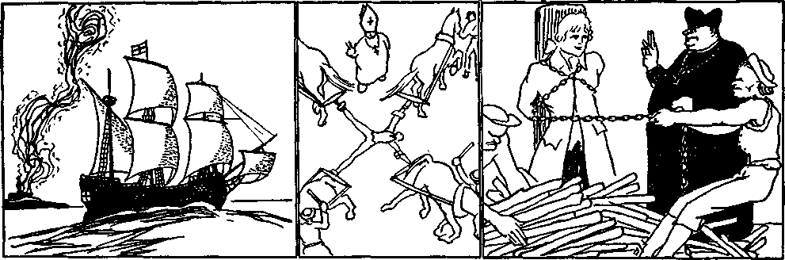
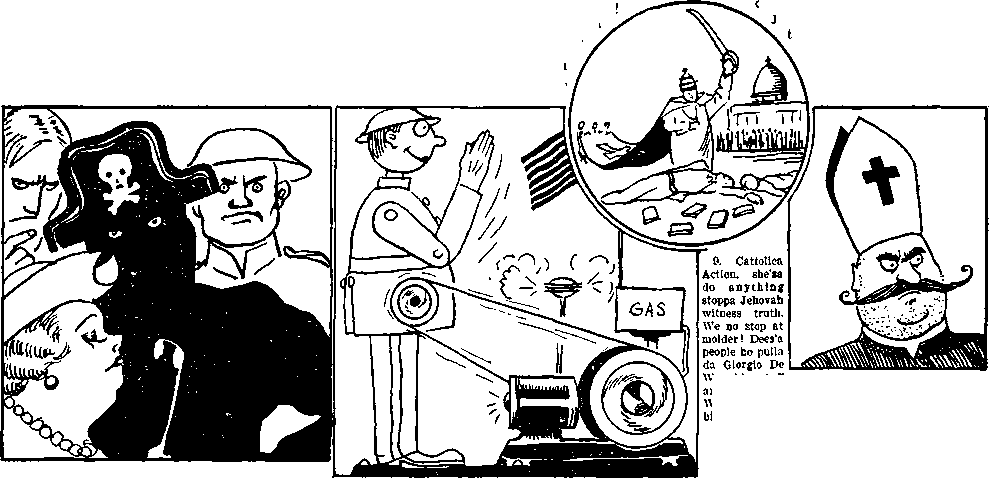

fiuiiiiiiiiiiiiiiiiiiiiiiiiiiiiiiiiiiiiiiiiiiiiiiiiiiiiiiiiiiiiiiiiiiiiiiiiiiii
in this issue
(Part 2)
lllllllllllllfllllllllllllllllllllllllllllllllllllllllllllllllllllHIIIIIIIIIIII
every other
WEDNESDAY
five cents a copy one dollar a year Canada & Foreign 1.25
Vol. XVIII-No. 450 December 16, 1936
>4Xg)«'
Public Education—The Bulwark
Professional Patriots at
Ignorant Old Women of D.A.R. 165
Much Worse Insults to the Flag 166
Massachusetts Stands Disgraced 167
Emmanuel F. Vandam, Educator 168
Those Dangerous (?) Teachers 168
The Great Teacher and
A Few Serious Educational Items 169
And Some Not So Serious 170
America’s New Schoolmistress 171 The Feeneys and the Kellys 172
Education Since the World War 172
History of the U.S.A.
(As rewritten by Ambrogio Mussi) 174
Canada, Ecuador, and In Between 176
Unhappy Orangemen in Ontario 176
Broun Removes Admiral’s Hide 176
Blackowski’s Black Eyeski 176
Pertinent Comment in the Press 178
When the Craze Hit Chicago 179
Honest Men Among the Crooks 180
Thompson Machine Guns
Denmark’s Proposed Great
Egypt, Ethiopia, Austria, Italy
Wondering When Time
Death for Socialists in Austria
Turkey, Greece, Albania,
Desperate Conditions in Hungary 185
Estonia Survived “Fuehrer”
Russia, Persia, China, Japan,
Protestantism Dead in Australia 186
The “Catholic” Interpretation 187
Bible-Reading Not Encouraged 188
The All-Sufficient Sacrifice 190
14,300 Citations in the 16 Books 190
Cartoons
My son, they have taken all. I have nothing to give you now, save an old, broken heart
C’m on, you brats; here’s y’r dinner
..oxg).---
Published every other Wednesday by
GOLDEN AGE PUBLISHING COMPANY, INC.
117 Adams Street, Brooklyn, N. Y„ U. S. A.
Clayton J. Woodworth President Nathan H. Knorr Vice President
Charles E. Wagner Secretary and Treasurer
FIVE CENTS A COPY
$1 a year, United States ; $1.25 to Canada and all other countries.
Notice to Subscribers
Remittances: For your own safety, remit by postal or express money order. When coin or currency is lost in the ordinary mails, there is no redress. Remittances from countries other than those named below may be made to the Brooklyn office, but only by international postal money order.
Receipt of a new or renewal subscription wall be acknowledged only when requested. Notice or expiration is sent with the journal one month before subscription expires. Please renew promptly to avoid loss of copies.
Send chance or address direct to us rather than to the post office. Your request should reach us at least two weeks before the date of issue with which it is to take effect. Send your old as well as the new address. Copies will not be forwarded by the post office to your new address unless extra postage is provided by you.
Published also in Bohemian, Danish, Dutch, Finnish, French. German, Greek, Japanese, Norwegian, Polish, Spanish, Swedish.
British Canadian Australasian
South African
Entered as second-class
Offices fob Other Countries
34 Craven Terrace, London, W. 2, England
40 Irwin Avenue. Toronto 5, Ontario, Canada
7 Beresford Road, Strathfield, N. S. W., Australia Boston House, Cape Town, South Africa matter at Brooklyn, N. Y., under the Act of March 3, 1879.
Volume XVIII Brooklyn, N.Y., Wednesday, December 16, 1936 Number 450
Public Education—The Bulwark of Liberty
My son, they have taken all. I have nothing to give you now, save an old, broken heart.
Ralph E. Dugdale, superintendent of Toledo (Ohio) schools, said of the public school that it is “the one bulwark of liberty left”. But the worst of it is that even that is not left. One by one the Roman Hierarchy has taken over all America had, government, army, navy, press, radio, films, etc.; and in some states the public school system, as in Pennsylvania, for example, is indirectly under papal control. Nothing is left, and the inquisition is on. Walter Huston, of Seattle, Washington, was selected by Owen D. Young and other national leaders, in the year 1929, as America’s brightest boy. Huston was then 16 years of age. The tests were nation-wide. At the expense of the leaders he was sent to Massachusetts Institute of Technology for four years, graduating in 1933. Unable to find any job where he could start as a chemist, he is now working in his home city as a laborer. This is no disgrace, and it does not mean that he will remain a laborer; it merely shows how hard it is for the young, now, to get a place in the world. By some the present generation of youth is referred to as the “lost generation” because it is a generation with no opportunities and has absolutely no hope except in the kingdom of Jehovah God.
The agitation against agitators is wholly an attempt to prevent unrest by choking discussion. Those with a good-sized pile (and don’t inquire too closely how they got it) want to preserve America by making it illegal to be an American.
The Texas Court of Appeals ruled as follows: The privilege of writing one’s views is recorded and protected, and at the same time accountability to the law is demanded for the abuse of the privilege. It has been said that the privilege which is thus protected in the organic law of the land is almost universally regarded, not only as highly important, but as being essential to the very existence and perpetuity of free government.
In America one of the greatest privileges the people have is to kick about the poor quality of the stuff sent out over WJZ and other radio stations specializing in the peculiar kind of jazz that appeals to the National Broadcasting Company. At Nuremberg, Germany, a woman was sent to prison for five months because she dared criticize the programs sent out by the German government’s radio stations.
The Jesuit Super-Patriots
“This brand of super-patriot who attacks every idea which he finds displeasing by calling it ‘Communistic’ has already done a great deal to undermine truly American ideals by his strategy of boring from within. He doesn’t attack free
speech openly; he contents himself with attacking those who exercise their right of free speech by intimating that they receive their orders from an alien power. He hasn’t the courage to attack the American public school directly; he effectively hamstrings it by limiting the teachers’ academic freedom with silly loyalty oaths and enforced lip service to the American flag, ignoring the fact that it is not the flag itself but the glorious ideals for which it stands that should be rendered homage.”—Asbury Park (N. J.) Press.
Lynn, Massachusetts, is still only five miles from Salem, the scene of the witch-burnings. The Lynn school board has just dismissed Miss Cora Foster, one of Jehovah’s witnesses, a faithful and capable school teacher in their midst for 40 years. The reason for her dismissal is that the Lynn school board is under the thumb of the Roman Catholic Hierarchy and Miss Foster loves God and refuses to worship the flag.
“Massachusetts school superintendents in convention at the State Teachers’ College at Bridgewater heard an address by a man who has studied educational systems in many parts of the world. The speaker was Dr. Isaac L. Kandel, of the Teachers’ College of Columbia University.
“Dr. Kandel said that education has become ‘outright propaganda’ in Italy, Japan, Russia and Germany.
“Many Americans think that it could not happen here. What these Americans overlook is that official throttling of education in foreign countries did not come with one swoop. In Italy, for example, it started with a teachers’ oath law.
“Thus many an American will sit back until a day comes when patrioteers have sunk their fangs deeply into education and just will not let go. Then there will be trouble.”-Boston Traveler.
Almost anybody with an ounce of brains can see that nothing is gained by trying to force young people into outward professions of loyalty, but how surprised some of these professional patrioteers in Massachusetts would be if they attended [college] chapel and heard seniors pledge “allegiance” by saying “liberty and justice for the rich” instead of “liberty and justice for all”. So the very thing they intend to guard against they are encouraging by their idiotic laws. The boys that are thus gleefully substituting Communistic phrases for the words demanded are not the children of Jehovah’s witnesses, but the evidence is in this office that the substituted phrases are being used in Massachusetts schools.
“This is not the Massachusetts which wrote its name so luminously in American history. It is not the Massachusetts of Samuel Adams and Faneuil hall and the birth of the revolution against royal tyranny. The loss cannot be accounted other than a national one.”—Editorial in St. Eouis Post-Dispatch on Massachusetts’ refusal to repeal the teachers’ oath flag bill.
Dr. John L. TildSley, who wrote the New York city oath requirement as a prerequisite to a highschool diploma, now admits that a pupil cannot be made loyal by a statute, and that a student with an “easy” conscience, who is not loyal, would sign the oath quicker than anyone else.
Professional Patriots at Washington
Professional patriots at Washington have made 700 janitors swear that they did not mop the floor armed with red mopsticks, and 117 clerks that if they used red ink they are sorry. Kindergarten teachers, woodcraftsmen and basket-weavers have sworn that they did not work any Communism into their courses. Having done this, the school employees were given their wages, and the country is safe once more, except from the feeble-minded politicians.
Calling attention to the legislation of the District of Columbia whereby each month a teacher must swear that in the month for which he is paid he has taught nothing about Communism, the Forth Worth Press then declares that in a poll of representative Americans from Maine to California 62 percent were in favor of schools’ teaching the facts about all forms of government, including Communism and Fascism, and 59 percent were in favor of college teachers’ freely expressing their views on all subjects, including government and religion. The Press then says:
Apparently, therefore, three out of every five of us want our children to learn what is going on in the living world today, to face their age without either blinders or rose-eolored glasses, to see things, whether pleasant or unpleasant, that are going on about them.
A subscriber in general very well pleased indeed with David Wilkie’s article on Fascism thinks it incorrect to say that Communism is an alternative of Fascism, and goes on to explain:
The Communist is a proletarian of any race, creed or color, not necessarily an Irishman or a Catholic.
He is fighting for emancipation from starvation, and has his hand full doing that little thing. Communism is not a secret thing, as is the Knights of Columbus, or the Masons, or the Ku Klux Klan. The Communist party takes no orders from the pope of Rome. The pope has waged a continuous warfare of propaganda against the Soviet. Last Labor Day, the first of May, in our little old town of Tacoma, Washington, the Communists had a parade which started at 15th and Commerce streets, and as the parade was being formed there were seven or eight priests from St. Leo’s on the job to see that none of their parish lined up.
Ignorant Old Women of the D.A.R.
Professing to be real Americans, the old women of the Daughters of the American Revolution have done much, very much, to overthrow public education in the United States. Louis M. Hacker, lecturer on economics at Columbia University, in an address to teachers at Philadelphia, said:
It is time that these busybodies are told what their ancestors fought for. The members of the D.A.R. are being unfaithful to the memories of those ancestors. It is time this organization stopped its witch-hunting and terrorizing of teachers by its campaign for loyalty oaths. Many of the members of today, had they been alive in 1776, would have been Tories and connived with the British for the suppression of the rebels.
Referring to the un-American women of the D.A.R., Professor George S. Counts of Teachers College, Columbia University, said of them that they are “too ignorant of American history and American ideals to know what they are doing. Their patriotism is a combination of thinly veiled snobbery and protection of privilege”. These D.A.R. give the true American a pain in the neck. It is not “Who was your dad?” or “Who was your granddad?” that counts, but ‘Who are you?”
There is nothing much funnier in life than somebody of very ordinary clay and very limited intelligence who imagines that because his or her grandfather wore overalls gracefully in 1776, therefore he, she or it is ‘some punkins’. The real Americans get a big kick out of laughing at these substitutes for regular folks. Said H. J. Kaley in the Pittsburgh Press:
I believe I have found the solution to a question that has always puzzled me, to wit, Why did George Washington die childless? The Greatest Revolutionist of them all must have foreseen the ignominy of being the progenitor of a potential D.A.R.
If the revolutionists who made this U.S.A, had been aware that one of the by-products was to be such an organization, one cannot but believe they would have preferred to save their time and let George Rex keep the country.
At this mossback organization’s current meeting at Washington these effete descendants of America’s real he-men took meticulous pains to go on record against each and every bit of proposed forwardlooking legislation on the calendar and as meticulously in favor of every Fascist-inspired proposal.
The aristocratic (?) members of this organization are not only living in the America of a century and a half ago but also on a reputation of 150 years ago. Ever since their inception it is impossible to point out a single instance in which they have benefited America —rather have they been a hindrance, a detriment and, frankly, a pain.
These good Americans, these best Americans, these super-Americans, have consistently opposed every forward step America has taken.
If these good ladies had inherited intelligence along with their pin, they should have become, ere this, aware that America will continue forward in spite of their efforts to retard. When are they going to wake up to the fact that intelligent and thinking Americans are almost universally opposed to everything they advocate ?
America needs so many good things to be done. The need of constructive thought is crying. If these superpatriots with their anti-bellum mentalities are unable to contribute anything beneficial, at least they should be kind enough to go back to their super-patriotic knitting.
The writer is not a D.A.R nor a G.O.P. nor any X.Y.Z., but feels he is qualified to recognize real Americanism and to criticize the phoney after standing in French mud up to his knees.
Influence of the Clergy
The clergy are professedly teachers of the Word of God. Their influence is mostly evil for the reason that they neglect the Scriptures. Noticing this four college boys, in the Tacoma News Tribune, addressed the clergy of that city as follows:
We college students are often accused of losing faith in God, religion, prayer, and the church through our education; and the accusations often seem painfully just. The Freshmen who enter college intending for the ministry leave as graduates completely indifferent to spiritual values—ignorant of religious matters.
Most of the students work hard six days of the week; when Sunday comes, those who are already disgusted with church attend services, expecting to hear a sermon—and are forced to endure a lecture. They expect to obtain much-needed spiritual nourishment, and are handed fireside hours and book-reports and plays—which is often the only thing the church has to offer. Spiritual things are made secondary to temporal matters, in the same churches which are dedicated to “Feed my sheep.” The thing we students lose faith in is not the religion, but the way that religion is portrayed by the church and its leaders!
Our advice to pastors is this: Dispense with your fireside hour and your dances and socials and concentrate on giving us God, and you will find the students—those who really think—flocking back to your standards. We want to hear live sermons from men who have really experienced religion—for we want to experience it ourselves. From now on: We Would See Jesus!
Lutheran ministers of Cincinnati have presented formal charges that some high-school teachers are telling pupils that man descended from the anthropoid ape and that Jehovah, the great Creator, is a tribal deity and not the true God. Wonder just where the flag-salute issue comes in on this. Do the same teachers that insist that man is an ape and Jehovah God a tribal deity choke pupils that insist on giving God the first place in their hearts and for that reason refuse to bow to the flag? Or do they do that only in the province of the Roman church ruled over by Mr. Margiotti, attorney general of Pennsylvania?
Many Retarding Factors
The lawyers (and doctors) come in for just criticism in their attitude toward education. They seem to act as if afraid others will find out how little they know. The New Current Digest pokes fun at legal terminology:
A lawyer thus illustrates the language of his craft: “If a man were to give another an orange, he would simply say: ‘Have an orange.’ But when the transaction is intrusted to a lawyer to be put in writing he adopts this form: ‘I hereby give and convey to you, all and singular, my estate and interests, right, title, claim and advantages of and in said orange, together with all its rind, juice, pulp and pips, and all rights and advantages therein, with full power to bite, cut, suck and otherwise to eat the same or give the same away with or without the rind, skin, juice, pulp or pips, anything hereinbefore or hereinafter or in any other means of whatever nature or kind whatsoever to the contrary in any wise notwithstanding. ’ And then another lawyer comes along and takes it away from you.”
Bus salesmen in recent years have done much to give the cause of popular education a black eye: Before centralization all the schools of Trumansburg, N.Y., cost $27,000 a year. Now, with a ten-percent increase in attendance, the centralized school costs $75,000 a year. Under the centralized plan the children get no better instruction than before; they are away from home much longer; they do not get enough sleep. But the change was good for the bus-makers, even if it was hard on the parents. Americans rush into everything with a whoop and hurrah before doing any figuring as to how they are going to get out. And that is the way they are plunging headlong into Fascism, with its concomitants of Catholic Action and the Inquisition.
Politicians have done incalculable harm to popular education, and will do far worse soon. What with drunken guards, and as many as twelve cases of whisky brought in at one time, the Tennessee State Reform School for Boys has been one of the worst places in the Western world. The grand jury picked twenty boys at random and found almost every one bearing scars and lacerations. Boy after boy testified to being beaten with wagon spokes or with the lash until they begged for death. Examining the noonday lunch for the inmates the jurors found cockroaches in the bread and flies in the pudding. Forty inmates fled within a few days to get away from the beast that managed the place. He quit.
The mere fact that a boy is in college does not necessarily imply that he has any common sense or ever will have any, and when the boys do outrageous things they themselves hurt education terribly with an indignant public. There is never any telling what a college boy will do. A group from the Harvard University funny magazine, the Lampoon, visited Washington and at 4:00 in the morning ran a red flag up over the building of the United States Supreme Court. Then they knotted the halyards in such a way that when the police got on the job they had to burn the flag, that being the only way they could get it down.
Much Worse Insults to the Flag
The foregoing escapade was bad enough, but the things the Jesuits have inspired have been so much worse that there is no comparison possible.
One method of destroying American schools is that now used of singling out teachers to take oaths, direct flag-waving and breast-beating, and thus drive out of the profession as many self-respecting members as can find a way out. The Jesuits care not how it is done, only that it is done. Do they hate education ? Look at their work in South America and Spain.
Representatives of Jews, Catholics and Protestants are running up and down the country, like a hen with her head cut off, shouting “Tolerance”, yet as a result of their own activities the Jesuits, acting for all three groups, are to blame for a great wave of intolerance sweeping over the country. All this pretended new and profound interest in the U.S. flag is complete, perfect and unadulterated bunk.
California has no law on this subject, yet when Jehovah’s witnesses, hard pressed by the intolerant advocates of “tolerance”, opened a school at El Nido, that state, where their little ones could study in peace, somebody stirred up 120 citizens to send delegates to call on the board of supervisors and demand that the school be closed. May the Lord save decent people from the hands of those that claim to be tolerant.
Probably yielding to Jesuit pressure, the attorney general of
C’m on, you brats; here’s y’r dinner.
Ohio has now ruled that school boards may demand that school children salute the flag, and if they refuse they may be expelled or disciplined otherwise.
Massachusetts (of which more anon) has disgraced the United States, and disgraced civilization itself, with its nonsensical efforts to substitute Fascist salutes for intelligent appreciation of the flag representing America.
Massachusetts Stands Disgraced
Invited to spend his vacation in Massachusetts, Harry Phillips, prominent Pacific Coast publicity man, said to his prospective hosts:
We are quite interested to note in your letter:
If you have youngsters why not plan to put them in camp here, or keep them with you?
Merely as a parent I believe that New England would be a good place to keep youngsters away from. When it is necessary to obtain salute and pledges of allegiance to the American flag by compulsory state laws it would seem to us to be a direct reflection upon the loyalty of every citizen who resides in a community where such a law is necessary. If the attitude of the state of Massachusetts, with its compulsory flag saluting law, represents
the cultural background of America and the literary and religious center of these United States
all we can say is, give us less of such culture, literary and religious centers.
Before they get through with it the businessmen of Massachusetts are going to find what Germany has found: that kowtowing to the Roman Hierarchy in everything has its disadvantages.
In 1932, on Washington’s Birthday, national editress Elsie Robinson said, in part, concerning the United States flag: “Those once noble folds, consecrated by the blood and tears of our heroic dead, are wrapped today, as camouflage, about entrenched greediness and selfishness, viciousness and vileness, cowardice and cruelty.” This is far worse than anything Jehovah’s witnesses have ever said, yet Elsie confused the witnesses with the Reds and scolded them all round in the Detroit Tinies. Elsie is just like anybody else who tries to say a lot about something of which she knows nothing.
The Frackville Egges are some eggs. Here is nearly a column in the Reading Eagle saying that the Reverend Walter H. Egge, Frackville, national chaplain of the P.O.S. of A., says “he believes students refusing to salute the flag should be denied the privilege of attending public school”; and then Doctor Tyler Dennett, president of Williams College, Massachusetts, and one of the most capable educators in the United States, wants to know, 'Where, pray, on God’s green earth should you put a child who declined to salute the flag unless it be in an American public school?” The Frackville Egges are some eggs.
Emmanuel F. Vandam, Educator
Emmanuel F. Vandam, educator, is assistant superintendent of schools of Brooklyn, N. Y. That means that, for the borough of Brooklyn, with a population of 2,785,159, he is the chief executive in control of educational work in that great field. When called upon by two ladies, with free copies of The Golden Age Nos. 420, 421, 422, he stated that he had issued instructions that no periodicals or literature of any kind may be accepted by principals or any member of the school staff. This is not in Borneo, but in the United States.
Then this man of wisdom, pointing to the subscription price on the inside front cover, claimed that presentation of the three magazines to him or to others is canvassing, even when the magazines were given away free. When handed the three free copies he flatly refused to accept them, but they were left on his desk. The Scriptures do not say that in Jesus’ day some wild man went running throughout Palestine warning the people to put cotton in their ears, for fear they might get an idea; and therefore no parallel immediately suggests itself. But if Brooklyn wants that kind of educator, then that is the kind it wants.
Trying to work his way into the public eye, Jos. R. Hanley, member of the New York state senate, said: “AVe want every man and every woman to honor that flag and to salute it voluntarily and respect it voluntarily. But if they do not salute and respect it voluntarily, by the eternal God, we will make them respect it involuntarily.” Hanley, not Hitler, speaking. Referring to Hanley’s speech, the Reverend M. Huyett Sangree, pastor of Wellsville (N.Y.) Congregational church, said:
“Some people consider themselves patriotic if they salute the flag. Then they are free to loot the national treasury, to corrupt the ballot, to fatten on the public works contracts, to cheat the army supply department, to use their fellow citizens for their own enrichment, or to waste the national resources at will to fill their own pockets. The godly people of Rome were its best citizens, even though they would not bow to the emperor’s statue. The godly citizens of America are its best citizens, even if they can’t salute the flag.”
A good many level-headed Americans caught on to this flag-saluting racket right away; the circulation of a few million Loyalty booklets helped mightily, and so did Judge Rutherford’s world-wide broadcast of February 23, 1936, on the same subject. Hale Tennant handles the flag-saluting fakirs sarcastically in the Benton Harbor (Mich.) News-Palladium, and it is good to read. He says:
Those Dangerous (?) Teachers
THOSE DANGEROUS (?) TEACHERS
Every honest American ought to rejoice that an allwise and infallible legislature has clamped down on these teachers and makes them swear a special oath of allegiance to the constitution. They all ought to be fingerprinted, and a brand on their forehead wouldn’t be too bad, so that when their nefariousness catches up with them, we can recognize these silk-winged birds of prey.
Of course, gamblers, fakers, white-collar thieves, pickpockets, bandits, murderers, stuffed-shirt pirates, usurers, confidence men, racketeers, panderers, shyster lawyers, kidnapers, swindlers, grave robbers, freebooters, gangsters, munition merchants of death, war mongers, yellow newspaper publishers, monopoly leeches, and all that generation of vipers—they are all right. Their touch may be a little indelicate and their technique not so highly polished, but they are kindred spirits to our exalted captains of industry, and we can bank on their loyalty. We do not have to make them swear a special oath of allegiance. But these mild-eyed, soft-voiced, gentle-handed teachers, look out for them. They are the real menace to the anchors of our civilization.
By way of contrast with intelligent commentators on the subject, the Hudson Dispatch (Union City, N.J.) says:
If their interpretation of the Bible is the only creed, to the exclusion of saluting the flag, as others do gladly, it is time for Jehovah’s witnesses to find a country where that kind of thing will be tolerated; either that, or go to some remote part of the world where they may have a country all their own.
Can you imagine some preacher coming into a school some day and invoking the Lord’s blessing because the teacher has been forbidden to tell something she knows is true, the parents know is true, and many of the children themselves also know is true ? Well, how about this ?— At London, Ontario, a teacher told her pupils the truth about Santa Claus. They told their parents. Their parents told the board of education, and the administrator of schools served notice on the teacher that any further telling of the truth on this subject would not be tolerated.
The Great Teacher and Underteachers
“Dear Teacher, patient with our childish ways, teach us the common things of common days. While careless hands the dog-eared pages turn, teach us the easy things, so hard to learn —the Truth, that needs no learning to declare; pure, white-souled Truth, than noonday sun more fair; and faith, that midst all fears and woes sings on the children’s lips. Well, Teacher knows, and Love, that hath ten million times been told—Love, that is older than the world is old—Love, that will live when [Satan’s world is] dead—when these great little lessons have been said, then heaven and earth in one great school will meet, learning old lessons at the Teacher’s feet.”—By Robert Burdette, in 1914.
Parents cannot shift to others their duty to instruct their children about God. This was the advice given to a parent who came into the office to inquire about sending his children to Sunday school. A study in The Harp was suggested; the man was not overconfident of results, but obtained three extra copies of The Harp and started for home. Three weeks later he made a trip of eighty miles to call at the office and explain that on the third Sunday his oldest boy told him he had learned more in the three Sundays than in all the lessons he had previously had in the “church” Sunday school.
Young Bill of British Columbia, four years old, child of a Golden Age reader, was with his mother on a C.P.R. steamship from Vancouver island to the mainland. Playing with some toys, Bill was addressed by a smiling male passenger, “Well, sonny, Santa has come early for you.” Said Bill, “Santa is the Devil, and the Christmas tree is of the Devil, too.” The passenger went down and out for the count. On another occasion, playing with some alphabet blocks, young Bill was shown by a well-meaning adult how to spell “Santa”. Bill promptly and vigorously rearranged the blocks to spell “Satan”, and the adult gave up in despair. Bill’s dad is a happy dad.
Bobby Hoffman, six years old, at his home in Jacksonville, Florida, hears much talk about witnessing. Recently, at school, his hand went up for attention. Teacher asked, “What is it, Bobby?” Bobby: “Did you ever read any of Judge Rutherford’s books?” Teacher: “Yes, Bobby, I have The Harp, Light One and Two, and the Government booklet.” When Bobby arrived home and told his mother about it she asked him how he came to ask the question. In all seriousness he replied, “Oh, I thought it would be a good time to give a little witness.”
A fond mother in Ohio, writing in about her six-year-old son’s experiences in refusal to salute the flag, says of him that he wants “to be a cowboy in the Kingdom, to ride a lion and not shoot anything”. He is in a fair way to get his wish.
A mother witnessing with a portable phonograph at a small town in Missouri was invited to come to the high school and put on a few records. She accepted the invitation, played one musical and two lecture records, and left nine booklets. The principal, a ‘church worker’, later gathered up the booklets and burned them. Shortly after it was found that he had gambled away his own earnings and that of other teachers, and fled the town in disgrace.
A Few Serious Educational Items
The Codex Sinaiticus, bought from Russia for £100,000, has been rebound. All the pages have been flattened and carefully patched, and the experts say the present binding will last at least another 500 years.
The British Museum, to accommodate new books, adds a mile of shelves a year. A new catalogue is being made, which it is estimated may be completed by 1958. It will make about 220 volumes, and will list more than 4,000,000 books.
One of Jehovah’s witnesses draws attention to Luke 22:44, that it does not say that Christ sweat blood, even though He may have done so, but merely that “his sweat was as it were great drops of blood falling down to the ground”. Luke was a physician. He was making a comparison, and there is no reason to put into the account any more than actually appears in it.
Beginning with 1936 botany will be taught to 135 blind pupils at the Indiana State School for the Blind, the first time this was ever attempted, and a truly great achievement. Extensive Braille labels will be attached to each plant and tree, and the blind will be taught from textbooks and by touch how to identify the species.
In New York city there are now mothers of thirty-six nationalities studying English, and sixty women are now in high-school classes as a result of the campaign launched twenty years ago to educate the foreign-born.
Today 220,000,000 persons speak English, 170,000,000 Russian, 90,000,000 German, 45,-000,000 Italian, 45,000,000 French, 24,000,000 Turkish. English is now spoken by eleven times as many persons as 100. years ago.
Former Governor Alfred E. Smith urges piano and violin lessons for the children of the poor, attesting the benefits he himself received from such instruction when a youth. It gives boys and girls a hunger for something finer in their lives, and keeps them out of mischief.
New York city has a juvenile judge that is worth having. Instead of sentencing bad boys to jail, to make them worse, he sentences them to read good books, which he names, and to send him their reviews. He is getting results.
A. L. Potter, of Kansas, thinks it would be a good idea to change the old motto,
“Children should be seen, and not heard,” to make it read, more in accord with the times:
“Children should be seen, and not hurt.”
And Some Not So Serious
The cartoonist says: “I remember with the heaviest of hearts the tears of joy in my father’s eyes as he escorted me determinedly to the railroad station and gave me a final word of advice. ‘Son,’ said he, ‘don’t be too hard on the world when you go forth to scratch for yourself; take a bath every Saturday night, and don’t always look as though you’re trying to swallow all the air in creation. Close your mouth once in a while: you might get your teeth sunburned.”
The Boston Globe man said Eve 8 (ate) and Adam 2 (too); total 10. Not content with that he said that Eve 8 and Adam 8; total 16. Also that Eve 8 and Adam 82; total 90. And that Eve 81 and Adam 812; total 893. And that Eve 814 herself and Adam 8124 himself; total 8,938. And, finally, and worst of all, that Eve 8142 know how it tasted, and Adam 28142 know what it was like; total 36,284. Summing it all up, it seems that Eve 89,061 and Adam 837,170; or a grand total of 972,462. This last sentence, y’unnerstan’, was fixed up in the office of The Golden Age, but it seems all O.K.
A grammarian inquires: “Is it not within reason that the word ‘within’ within Luke 17:21 is not ‘within’ within God’s truth, within His Word, within His mind, but is ‘within’ only within translations; so ‘within’ is ‘within’ only within man’s mind and is not ‘within’ within truth, but ‘within’ is ‘within’ within error, and so ‘within’ is without truth?” This is all sad, but so.
A subscriber now living in New York tells of a beating her son received in Pennsylvania ten years ago for losing a pencil. She says: “At 18 his hands shake so he can hardly write. Before the beatings, two in two days, he was a plump, healthy, normal child. The instrument of torture was a wooden paddle with round holes in it. From the back of his neck to the turn of his hips he was black and blue, and swollen until the flesh stood up an inch above its normal condition. Where the holes were in the paddle were big round black welts the size of a quarter. The boy’s nervous system was ruined.”
Typhoid serum and diphtheria toxin were administered to the pupils of Hahira Consolidated School, Hahira, Georgia, and a few hours later approximately 100 collapsed and scores of others were desperately ill. A fine time was had by all.
Lynn Waxes Sarcastic
A. L. Lynn, of California, drawing attention to the Scripture record that the early primitive Christians had all things in common, waxes sarcastic at the alleged Christians of today who are so excited about what is going on in Russia. He says of the early Christians:
They kept their belief strictly to themselves, never offending anybody by mentioning it, least of all the religious leaders of their day. These early primitive Christians went direct to heaven on flowery beds of ease, never being persecuted at all, especially those that entertained the Romans in their great Colosseum on celebration days.
“They” gladly joined up, each and every one of them, with Constantine the Great, at the Council of Nictea, A.D. 325, this being the date when the pure virgin bride of Christ had her first date or marriage to her first earthly king, to do his will and bidding. The kingdom of God immediately came, and his will was then, for the first time, immediately done on earth as it is in heaven. The Christians then for the first time gladly went out to help kill or take possession of the heathen, thus strengthening the kingdom of God on earth, the Holy Roman Empire.
The Dark Ages, which then followed, are a myth, and no one was ever persecuted or put to death for having a copy of the Scriptures in his possession, not for at least 1200 years, anyway. During all that time people were openly encouraged to meet above ground for the study of the Word of God; hence there never was any cause for the “Reformation” which followed the above-mentioned Reign of The Bride of Christ in Temporal Power.
Following the “Reformation”, Christians always got along together in the bonds of Christian love, never having persecuted or tortured one another to death in the name of their Redeemer. That was a mere fairy tale regarding our various forefathers’ coming over here to America in order that they might have religious liberty—for themselves. Christians were never known to have prayed to the same God for one another’s destruction and then gone out and shot one another to pieces in answer to their prayers, when their various earthly kings went to war against each other. It was never mentioned in the prophecies of the Bible, least of all in the 17th and 18th chapters of Revelation, that they would ever do such things.
The Christians’ Gospel has always and ever been one of “peace on earth, good will toward men’’. They have always been “the light of the world”, having always witnessed to the nations when they were doing or about to do anything that was contrary to the Higher Law and which would lead them into wars, pestilence, famine, sorrow and death.
The New Teacher
In other words, the pure espoused virgin bride of Christ, with the backing or consent of her various and numerous earthly kings and favorites, has never been known to persecute, mob or torture to death anyone in the name of Christ, least of all, those that witness to his Word of Truth. Inventors and scientists have always been perfectly free to bless mankind with their inventions and knowledge. The inventor of the telescope was free to let the world know how many moons Jupiter had, etc.
America’s New Schoolmistress
America’s new schoolmistress is the Roman Catholic Hierarchy, famous “educator” of Spain, Mexico, Cuba, Colombia and other countries where not half the people can read and write and where a very large proportion of the property, by hook or by crook, got into the possession of priests who, for a consideration, will virtually accept bribes countenancing any crime under the sun. The one unforgivable crime, under this New Deal, will be to say or even to think anything at all against the worst gang of racketeers this side of hades, the infamous “church” of the Inquisition. All history shows that this gang is never contented, never satisfied. What they got yesterday by threats, coercion, boycott or worse, they boldly claim today as a God-given right, and go on from that to demand still more unreasonable things. As an instance, take this teachers’ oath law and flag racket.
Having discovered by means of the Teachers’ Oath Law of Massachusetts (repeal of which has been demanded by the Smith College chapter of the American Association of University Professors) that there is a way by which the Hierarchy can “get” Jehovah’s witnesses, the tools of the Hierarchy are losing no time in getting wheels in motion to spread the same legislation to other states.
Thus, Rhode Island has a model teachers’
pledge already, without the signing of which, before a notary, no teacher can procure employment, but this does not satisfy the Hierarchy, nor, and that is quite incidental, Lawrence A. Mooney, department commander of the Veterans of Foreign Wars, who may or may not be a Papist. In a colunm-and-a-half statement in the Providence Tribune Mooney ridicules the following pledge, insisting that it is not sufficient. To be perfectly frank about it, what Mooney is seeking is a statute law, a Fascist law, under the cover of which the Inquisition may proceed in Rhode Island as it has already proceeded in the states of Massachusetts, New Jersey, Pennsylvania, Ohio, Illinois and Washington. The oath now actually in operation in
Rhode Island, and which does not suit Mr. Mooney or the pope, is:
I, as a teacher and citizen, pledge allegiance to the United States of America, to the State of Rhode Island and to the American public school system.
I solemnly promise to support the Constitution and laws of nation and State, to acquaint myself with the laws of the State relating to public education, also the regulations and instructions of my official superiors, and faithfully to carry them out.
I further promise to protect the school rights of my pupils, to conserve the democracy of school citizenship, to honor public education as a principle of free government, to respect the profession of education as public service, and to observe its ethical principles and rules of professional conduct.
I pledge myself to neglect no opportunity to teach the children committed to my care loyalty to the nation and State, honor to the flag, obedience to law and government, respect for publie servants entrusted for the time being with the functions of government, faith in government by the people, fealty to the civic principles of freedom, equal rights and human brotherhood, and the duty of every citizen to render service for the common welfare.
I shall endeavor to exemplify in my own life and conduct in and out of school the social virtues of fairness, kindliness and service as ideals of good citizenship.
I affirm, in recognition of my official obligations, that, though as a citizen I have the right of personal opinion, as a teacher of the public’s children I have no right, either in school hours or in the presence of my pupils out of school hours, to express opinions that conflict with honor to country, loyalty to American ideals, and obedience to and respect for the laws of nation and State.
In all this I pledge my sacred honor and subscribe to a solemn oath that I will faithfully perform to the best of my ability all the duties of the office of teacher in the public schools.
The Feeneys and the Kellys
At Larksville, Pennsylvania, a conscientious boy, a victim of heart illness and twenty-two months in bed with it, was expelled from the public school for quoting Exodus 20:2-5 and standing by it. His teacher was a Miss Kelly, and the superintendent of the schools was a Mr. Feeney; and if they are Catholics that explains it all very well. Can somebody tell why it is that just one type of people in America, with one type of religion, are more narrow-minded and hateful and oppressive than any other ? The lad in question was not one of Jehovah’s witnesses, nor were his parents, but they had evidently been reading and thinking on the literature of God’s kingdom which the witnesses put out.
At the Walkersville (Frederick county, Md.) public school an experiment will be made in religious education. It is an experiment in the wrong direction. Though made under the nominal guidance of so-called “Protestants”, it is playing directly into the hands of the Roman Catholic Hierarchy, and quite likely the experiment was made at its suggestion.
Former supreme court justice Daniel F. Co-halan, addressing the Catholic Electric Workers’ Union in New York, said that “the Catholics of the United States must insist on the right to have their children receive religious instruction in the public schools”. Guess who the teachers of “religion” will be, and what they will teach.
The North Dakota supreme court, overruling the lower court, decided that Roman Catholic nuns may wear their ecclesiastical garb in schools of the state, so long as they obey the instructions of their superior school officials.
Governor Lehman has signed the bill permitting municipalities in New York state to provide bus service for children attending parochial schools. The principle back of the bill is that there are in New York state, say 210, different religious denominations, and if each one desired to have its own school for teaching reading, writing and arithmetic and other like essentials, then each community would need to provide 210 kinds of bus service.
Two Catholic boys, tired of the junk taught them in a parochial school in Indianapolis, poured kerosene on the stairs and set fire to their Holy Angels Catholic school in that city. They wore gloves, so the police would not see their fingerprints, but got caught anyway.
Now that Rome has seized the movies, and every act and scene must in some way boost the Roman propaganda, feelers are being put out that the government should support free movies for the children, on the ground that children absorb and remember a surprisingly large proportion of what they see filmed and tend to accept as true what they see on the screen. Those who doubt that Gog, prime minister of the Devil, is bent on capturing the world for Rome, and has the trick nearly turned, have a big surprise coming shortly.
Education Since the World War
The American Civil Liberties Union declares that in the years since the World War more laws have been passed interfering with teaching in public schools than in all America’s previous history; more college professors have been dismissed or disciplined because of their views than in any other similar period in American history; meaningless formal patriotic exercises, flag-saluting and conventional instruction in the Constitution are required by law; special oaths of loyalty to the Constitution, not required of other public servants, are exacted from teachers in twenty states, and in many of them from teachers in private schools as well; history textbooks have been revised to make past history square with today’s prejudices; teachers’ unions are often opposed, and in some cases outlawed; more student papers and liberal clubs in colleges have been censored than in any similar period.
Byron N. Scott, Democrat, of California, Hearst’s home state, thinks he knows where much of the trouble lies. It isn’t with the teachers. He said, on the floor of Congress:
This woefully underpaid, overworked, much-maligned group of men and women that has suffered so much from the malicious attacks of William Randolph Hearst and his silly sycophants, both paid and unpaid, has done more to build up the proper concepts of citizenship than the pseudo-patriots will ever be able to tear down.
I think it a whole lot better to praise the school teacher than to pay lip service or to play into the hands of what I consider the greatest menace to democracy and liberty in this country—William Randolph Hearst.
I took an oath to support the Constitution when I started to teach school. I thought it was rather silly then, but that was before Mr. Hearst started his ‘ ‘ Red scare, 1935 edition.”
Today that oath has become a matter of persecution. Persecution of American citizens at the instigation of William Randolph Hearst, who never acted under the stimulus of a decent motive in his life.
The American Federation of Teachers, at its convention in Philadelphia, in August, urged a boycott of all Hearst newspapers and other media of publicity, following the preamble given below:
Whereas William Randolph Hearst, through his control of numerous agencies of communication, such as newspapers, magazines, movies, news reels and radio, has attempted to pollute the minds of the American people through distortion of facts on all vital matters to such a degree that Senator Norris was led to characterize Hearst papers as ‘the sewer system of American journalism’, and
Whereas he is an avowed foe of the child labor amendment and is one of the biggest employers of child labor, and
Whereas he has been a constant enemy of academic freedom and of honest and courageous teachers and has been a motivating force in loyalty oath legislation and red riders, and
Whereas he is the bitter enemy of trade union principle and has throughout his career, both as editor and employer, fought all efforts of workers to better their conditions, and has conducted such vicious campaigns to malign and cripple trade union efforts that he was denounced publicly by the late Samuel Gompers, president of A.F. of L., and
Whereas he is the chief proponent of Fascism in this country, as evidenced by his campaign against free speech, his soft pedaling of the Blaek Legion crimes, his expressed and open admiration of Hitler and Mussolini and their policies, and his use of all the resources at his command for the dissemination of Fascist propaganda ; and
Whereas he is the outstanding jingoist of the country and has used his powerful resources in attempts to entangle this country in imperialistic wars; k .
A Casual Philosopher
A philosopher who prefers to remain unknown casually dashed off the following meditation, and carelessly permitted it to fall into the hands of The Golden Age.
With reference to Catholic and pseudo-Protestant enthusiasts for flag-saluting. To persons trained in the Catholic tradition, whether they are Catholics themselves or not, genuflections, salutes, formal prayers, breast-beating, cross-making and cross-worship, kneeling on the knees and lying on the floor before images, pictures, signs, symbols, mean everything.
The inner convictions, the principles involved, the inharmony of such acts with the commandments of God do not particularly matter to persons so instructed. To them it looks perfectly proper that one who refuses to salute a flag (or a cross, or church building, etc., etc.) should be severely punished. It matters not in the least that one who takes such a stand may have excellent reasons, conscientious scruples and high moral standards.
To the person trained in the Catholic tradition and indoctrinated in the Catholic religio-political organization all these things are secondary to gestures, if, indeed, they matter at all. Can we blame them greatly if after having had these views drummed into them from the cradle they object when someone who has a free spirit and sincere heart balks at meaningless attitudes, salutes and postures? Is it right to persecute them for their fixed and probably unalterable inhibitions and prejudices? Certainly not.
Of course, when it comes to letting such persons have any position of responsibility or instruct children, or
(Ab Rewritten by AMBROGIO MUSSL not to be confined with Ambrogio Hatti)
1. Da peelagrim, da Hugenot anda da Quake, dey run away froma da clutch ofa da Inquiseesh’n. In America he’sa try to build it up a new nation. He’sa talk abouta da freedom of a conscience and to worship Alamighty God. Butta datta isa heresia, heh heh! Boin’em up cnna da stake-a!
2. Da Nation’s grow pooty fast. Da peoplea stllla belleva deesa tripe abouta leeberty. He’sa theenk that papa the'sa sleep and he no catcha dem. Ha-hah! Patrlcka Henry he’s a say, “Geeva me leeberty or-a geeva me dett.” Ha-ha. and he’s a getta da dett weetha eenteresta I!
3. Tommaso Jeff’sonno— to da stake-a! He’sa write da Declarashe ofa Indipcndenza. Deesa documento is heretical, anda anti-Cattolico, He ’sa makea a fina torch.
5 To da stake-a witha Giorgio de Wash’! He’sa leada da nation, and he’sa warn againsta da foreign power—hah! Thatsa me1 Shoo, Mike* He’sa smells pooty goot as a cinder. Da people leeberty’sa go pf—fpft, joost like-a datta!
4. Da signers ofa da Declarashe of Indipendenza— to da stake-a' Dey become foolish, dey theenka da Cattolica Hierarchia is-n takc-a this anti-tyrant stuffa lyina down! Dey make-a finc-a strecta lamp in Citta vaticano.
are
ash’
Cheesa.
stuff here.
da
7. Organize da Black Legione, Amer. Leg., DA.R., Hearst, etc. Da leeberty she’sa persecute to deaths; da Conscience, She’sa ravish anda dead. Jehovah’s witnesses, ha-ha! Dey go to da jail, da torture chambers, da concentrashe campo.
& Today, da Cattolica Action in U.S., she’sa Invents machlna (Pat Apld. For) to make-a patriottl. Da Leetle Giants Flag Sa-Inter In every home. You can-a changes da symbols to saluta da Flagga, da salnta, da pope, da Devil, and a Hitler, Mussolina, anda so on. No hava machines, no saluta da flagga; no saluta da flagga and he’sa go to jail, keeka him outa from school—keela him!
10. Ambrose Muss! himself, who rewrote this history of the United States, he is so popular that .when two page boys were overcome by a foul odor and dropped bis twenty-yard train the adoring multitude let it drag In the mud and some of the local boys sat on it and tried to filch a ride. A collection is being “lifted” to put Wheels on it.
ona da rack—anda feela betta witha 17 yards ofa flame down heesa troat.
otherwise exercise their discretion or lack of it in public matters, it would seem that people with at least some measure of sanity would take steps to see that they are excluded, not indeed because of religious convictions, but because their mental conditioning has been such as to make them untrustworthy in matters of real moment.
They cannot be depended upon to judge fairly, impartially and sanely. They cannot be trusted to do right merely for the sake of doing right, or to discern the really important principles that make this nation, or made this nation a really free people. Free people, with balanced judgment and solid principles, cannot afford to entrust matters of public safety and welfare to persons who, however much they are to be pitied (if and when), certainly should not be entrusted with responsibilities which would not be with equal readiness committed to a two-year-old child.
The foregoing is undoubtedly true. The Hierarchy’s practices and methods upon its subjects blunt the moral faculties, and are intended to do so. A diligent study of the Scriptures and of all the literature of Jehovah’s Kingdom, and of all past history of the Roman Catholic Hierarchy, and of all its present tendencies and influences in the earth, leaves not one good thing to be said of it. Its influences are wholly bad, wholly corrupt, wholly degrading and demoralizing, and bring, inevitably, poverty, ignorance and ruin in its wake. It would be an offense against God to say a decent thing of it, or of the Devil, its author and general manager.
Fire Extinguishers as Premiums?
An unfriend in Massachusetts sent in a year’s subscription for the G.A. and then was mean enough to say: “Would it be possible for you to give a fire extinguisher as a premium with the G.A. subscription? I find lately that every time a G.A. is dropped in the letter box it is so hot that it fills the hall with smoke.” Now, what do you suppose is in the head of a man to make him write like that ? Nothing ?
Returning to a more hopeful and more happy subject, here is a letter enclosing two snapshots of the 22 youngsters at one of the Kingdom Schools.1 One of the youngsters is the teacher, indicated by a towering height of perhaps three inches above the tallest pupil; all are smiling and happy; her smile is one of the happiest. The letter, from one of the backers of this school (’way out in an immense big house in the country, far away from every distracting sight or sound), is good to read:
I know you are very busy, but I thought I would write and let you know how everything is coming along with the Kingdom School.1 The School will be there again this year. The kiddies can hardly wait. It begins next month on Labor Day. About 5 more pupils will be enrolled.
Your prediction concerning Bro. & Sister Jones’ farm (where the school is held) producing abundantly has come true. All their neighbors’ tomato plants froze, but not theirs. As a result they do not know what to do with all their produce. Wally buys a lot of it for the store, and then they have other means of selling it, but even so they donated a whole truckload of beans, tomatoes, com, etc., to the Pioneer Camp at Philadelphia. In fact, their nicest produce went down there.
My sister and I and Sister Jones are papering and painting inside so everything will be housecleaned by school time.
All the children came back last year from school needing reducing exercises, as the food there was so good and plentiful they did not know when to stop eating.
We have as yet found no lawyer to take our case; none with any courage around here, I guess. Been having trouble in our territory and right now have three cases pending.
Am enclosing some pictures taken the last week of school. Expect to have the same teacher. You can hardly tell her from the children. Don’t they all look healthy ?
And the answer is that they do. Jehovah God is interested in the education of these little folks that in the fall of 1935 so courageously took their stand on His side. Happy is their portion now, and with every prospect that their happiness will continue forever.
Canada, Ecuador, and In Between
Unhappy Orangemen in Ontario
THE Orangemen of Ontario are unhappy as they see their country rapidly slipping into the grasp of the Roman Catholic Hierarchy. Cecil W. Armstrong, one of the Orange spokesmen, in an address at Fenwick, Ontario, shows that others besides Jehovah’s witnesses are beginning to see something of the conditions now hammering at their doors:
There is now a papal state in Quebec. They ignore the laws of the privy council. They set up their own marriage laws. They arrest our colporteurs for selling Bibles in that state. They throw our Anglican clergy into jail with pickpockets and fingerprint them for preaching the truth. They make dickers with employers who refuse to hire men who are not affiliated with the Catholic labor unions. What do they care for any law that interferes with the program of their church to continue as mistress of all public institutions ?
Broun Removes Admiral Fiske’s Hide
A dmikal Fiske is quoted by Heywood Broun as saying:
And neither can it be denied that war has an exceedingly stimulating influence. . . . The great majority of human beings are not very highly gifted mentally; most of them want to do exactly as they please and resist any kind of discipline, and, therefore, cannot act together.
And then Broun says witheringly (and it must be something terrible to have such a sarcastic pen):
Seemingly, civilization has not advanced sufficiently to take from the dullards their vicious desire for joy and peace. These backward folk want days crowded with happiness and contentment, and not that period of negation known as the zero hour. Dumbly they resist becoming members of those great co-operative groups known as “killed” and “casualties”.
Deplorable Conditions in Cuba
A GENTLEMAN in Cuba, writing of the terrible depression there, and its effect on the people, states that it has now become a common practice for the middle classes to use their wives and daughters as bait, to enable them to get employment or income sufficient to keep their homes going.
Chile in Good Shape
CHEER up. Chile is in good shape. There is no unemployment. Extensive public works are under way, and there is a surplus of $10,000,000 in the budget.
Blackowski’s Black Eyeski
ON February 16,1936, Officer Stanley Blackow-
ski, of the town of Irvington, N. J., spied Richard V. Gatter standing on the sidewalk with a copy of The Golden Age in his hand. Mr. Blackowski, well instructed, saw “red”, and arrested Mr. Gatter as a menace to the town of Irvington, swearing to a complaint that Mr. Gatter was violating the laws of Irvington. Gatter was held in jail for three days for being one of Jehovah’s witnesses and having a Golden Age in his hand. Even the Irvington court lacked the gall to convict him for that offense, however, and dismissed the case. But that was not the end, as far as Gatter was concerned, who sued Blackowski for damages for malicious prosecution, and, on November 24 last, secured a judgment for the sum of $150 damages. And now Blackowski is wondering how he is going to pay.
Ecuador Indians Tire of Religious Humbug
TIRED of religious humbuggery, being forced by their employer to W’ork overtime and attend mass and perform other so-called “religious acts” in which they had lost interest, eighty workers on the Casmano estate in Ecuador appealed to the government, were awarded $4,000 back pay for the overtime worked, and were told they need not return to the farm where they had too much “religion” and not enough simple justice.
U.S. Flags 5c per Dozen
CHICAGO is excited, temporarily, by the discovery that millions of U.S. flags sold in the United States in honor of Washington’s birthday were made in J apan, and could not be made in America for the price, 5c per dozen, at which they were sold. American Legion, D.A.R., Wm. R. Hearst, and other professional patriots, kindly take note. (And Hearst did.)
The Road to Panama
THE road to Panama has been opened provisionally through El Salvador and will soon be fully completed. It won’t be long now before a person may travel by automobile all over both continents.
i The Last Heard of Frank Hague
THE last heard of Frank Hague (along the latter part of November) he was “resting” at a Catholic sanitarium at Mt. Clemens, Mich. 17?
A five-minute talk
by Judge Rutherford
JEHOVAH’S witnesses are those who have agreed to follow in the footsteps of Jesus in obedience to God’s law. They diligently comply with the law laid down by Jesus, and willingly render unto the state the things that belong to the state, and to God that which belongs to God. They will not violate any law of the state that is in harmony with God’s law. But if the law of the state is in direct violation of God’s law they will obey God first and all the time. In doing this they follow exactly the lead of the apostles of Jesus Christ. Those faithful men, in obedience to the Lord’s commandment, went about preaching the gospel to the people. The state authority made a law to compel the apostles to cease their preaching. They continued, however, and for that reason were arrested and brought into court. In their defense before the court they said, as recorded in Acts 4:19, and 5: 29: “Whether it be right in the sight of God [for us] to hearken unto you more than unto God, judge ye. . . . We ought to obey God rather than men.” All true Christians today take that very same stand.
Instead of saluting some worldly flag, and thus ascribing salvation to some earthly power, the true followers of Christ Jesus, including Jehovah’s witnesses and the Jonadabs, the great multitude, ascribe salvation to God and Christ. At Revelation seven the great multitude is shown standing approved before the throne of the Lord and saying: “Salvation to our God which sitteth upon the throne, and unto the Lamb.” And all of Jehovah’s witnesses and the angels of heaven are shown as saying, ‘Amen: blessing and power be unto God for ever.’ The true followers of Christ Jesus have no objection to any person saluting a flag who desires to do so. As for themselves, however, they have undertaken to serve God, and will obey Him. They fulfill their obligation by teaching their children to do likewise. Men have organized nations of the world and, failing or refusing to give heed to God’s Word, they have fallen under the influence of the Devil, and therefore it is written, in 1 John 5:19: ‘The whole world lies in the power of Satan, the evil one.’ Jesus with authority stated that the Devil is the invisible ruler of the world. He said concerning himself: “My kingdom is not of this world.” The true followers of Christ Jesus recognize His kingdom as their hope and they must and will obey His law. All persons who ever get life must be obedient to God and Christ. The flags of the nations of earth are not the flags of God and His kingdom, and they ascribe salvation to earthly powers, and to compel such flags to be saluted is compelling persons to violate God’s law, which is supreme.
The Lord caused His prophet to propound this question in behalf of those who have agreed to do God’s will: ‘Shall those which frame mischief by law have fellowship with thee?’ Religious organizations that indulge in politics frame unjust laws which work injury to others. Concerning such the Lord God says (Psalm 94: 21-23): “They gather themselves together against the soul of the righteous, and condemn the innocent blood. But the Lord is my defense; and my God is the rock of my refuge. And he shall bring upon them their own iniquity, and shall cut them off in their own wickedness; yea, the Lord our God shall cut them off.”
For centuries Satan has employed religious organizations and the formal practice of religious ceremonies in order to gain complete control of mankind and turn them away from God. The great and final climax is now at hand, in ■which every person must take one side or the other, and only those who take and hold a firm position on the side of God and His kingdom will receive the blessings of life. Never before have people been in such dire need of the knowledge and understanding of God’s Word as at the present time. Jehovah’s witnesses, by God’s grace, are trying to get this information to the people, and Satan and his agents are doing everything possible to keep the truth from the people. Instead of the schools’ giving time and attention to the formalism of flag saluting they should give attention to the study and understanding of God’s Word that the children may be guided in the right way. Men must be consistent in order to teach the children honesty. Children, because they love and serve God, refuse to salute the flag, and are severely whipped to make them good citizens. The president of the
ITT
United States swears to uphold the Constitution. The Supreme Court decides that he has violated his oath by going contrary to the Constitution. The president denounces the Supreme Court and relegates the Constitution to the “horse and buggy days”, and many applaud his
[The interesting series of Bible talks of which the foregoing is one has been reproduced for the phonograph. These records may be run on the ordinary type of machine, and are being widely used for passing important Bible truths on to others. The Watch Tower action. If his solemn oath will not compel the president to obey the law, how much good will be accomplished by using physical force to compel God-fearing children to salute the flag? Public officials manifest inconsistency, and Rome loves to have it so.
Bible & Tract Society, 117 Adams St., Brooklyn, N.Y., are the distributors of these records, and any inquiries concerning them and the manner in which they are used should be addressed to them rather than to the office of The Golden Age.]
WHAT The Golden Age has published from the pens of Judge Rutherford and other thoughtful men about compulsory flag-saluting shows the utter nonsense of the whole idea of substituting ceremonies for education. Nevertheless the Roman Hierarchy’s idea prevails in many darkened minds. California has numerous examples of this, besides the gentleman, a native of that state, who is proprietor and active director of the world’s largest, most sensational and least dependable newspapers. However, Hearst’s $220,000,000 fortune cuts a big figure in the world, and many people, to have a share in that fortune, would cheerfully forfeit all respect of their fellow men and all hope of everlasting life itself.
Though California does not, as yet, have any compulsory flag-salute law, yet, in deference to Hearst or the Roman Hierarchy, or other similar influences, children have been expelled for failure to put the United States flag above their obedience to God’s Word. Among these was Charlotte Gabrielli, nine, of Sacramento, California.
Judge Peter J. Shields ruled that Charlotte does not have to salute, but qualified his decision by stating that if there was any element of disloyalty to the country or disrespect for the flag, or any political or social purpose was involved in the matter, her action would not be tolerated.
This jumping sidewise encouraged the stupid school officials, and now they say that Charlotte will have to salute anyway, or the great State of California, without any law whatever on the subject, will be so terrified at her presence in the public schools that the doors will be closed when they see her coming. The San Francisco News said of Judge Shield’s decision:
Shakespeare’s Dogberry could not do worse than that.
Has Judge Shield’s ever heard of another provision in the State Constitution guaranteeing freedom of speech ?
No Nazi could go farther than Judge Shield's implication that if little Charlotte Gabrielli had other grounds than adherence to a religious sect for refusing to salute the flag, the state would crack down on her.
There is an explicit denial of the essential American idea of freedom in what Judge Shields says.
And what a craven concession to the mob is his dictum that saluting the flag “is a very admirable exercise to which our people have long been devoted ’ ’!
Free men will fight for the flag and what it stands for so long as it stands for freedom. Only potential slaves will salute it by law.
“The Best Antidote”
Attorney Ernest Besig, Sacramento, California, urging that Charlotte Gabrielli be not expelled for refusal to salute the flag, said to the superintendent of the city schools:
If there is anything dangerously seditious in having such strong religious convictions, it is possible that the best antidote rests in having the student continue the public school education to which she is entitled. For sheer cleverness it would be hard to beat or to match that statement.
The following is a true copy of a document filed at Atwater, California, spelled and punctuated like the original:
Resolution atdoped by the board of Trustee of Jordan school at a meeting of Said board Feb. 18-1936. Resolve that including the Flag as part of The course of study is a reasonable requirement under section 1.20 of school code, and that this board has this day (Feb 18-1936) Suspended Anna Baker from school until such time as she cares to conduct her self in a proper manner, including suiting The Flag and repeating The Leagion to this country, your TRouly,
J R Atkins J D Lamme Fras M. Barrett Clerk.
If Mr. Barrett is a graduate of the school from which Anna was expelled, congratulations are in order on her expulsion.
The Lodi (Calif.) News-Sentinel, March 6, 1936, had an eight-column scarehead, clear across the top of the page, reading, “Lodi Schools Expel Communists,” referring to the bravery shown by school officials who, under pressure of Roman Catholic representatives of the American Legion, expelled a boy of 10 and two little girls of 8 and 9 years of age from the public schools of that city. The children were children of Jehovah’s witnesses, neither they nor their parents having the slightest interest in communism in any form. The next day the same paper contained a short article in which the chairman of the board of education expressed regret that an attempt was being made to deprive little children of an education, which would seem to be a proper attitude for anybody to have, and especially a chairman of a board of education. Principal Leroy Nichols and the American Legion now share between them all the glory of depriving little folks of an education because they could not conscientiously salute the flag.
Idaho is getting the fever of imbecility also. Mrs. Fred Heywood, of that state, in the Country Home magazine for August, 1936, said:
Two young boys have been expelled from school here, and their reinstatement is denied unless they will go through the formal drill of saluting the flag. Their objection is based on purely religious conviction, not on any lack of patriotism. . . .
Saluting the flag will not change a man an iota if he is not so inclined. During the war I noticed that the loudest patriots and lustiest flag-wavers were those farthest away from the trenches.
When the Craze Hit Chicago
When the craze hit Chicago it went to the heads of some of the politicians and others whose whole idea of patriotism is whooping things up and shooting things up and drinking plenty of dead rats extracts and Peoria products in between. Accordingly they were for denying Beverly Buffington her diploma, but wiser counsels prevailed. The Omaha Herald said on this:
Threatened with the loss of her eighth grade diploma because she didn’t participate in a flag-saluting ceremony in her school, Beverly Buffington of Maywood, Ill., dried her tears and said:
“It would make me feel bad, of course, if they did not give me a diploma, but if I saluted the flag it would not mean anything. I would be a hypocrite.”
There out of the mouth of a child is a very simple and eloquent reply to the busybodies who insist on tormenting little folk over a matter which runs counter to the precepts of their religion. It ought to be a satisfying answer, but it won’t be, because strong within us is the passion to compel others to think as we think, do as we do.
In Beverly’s case there is not even any law which requires flag saluting in schools. Fortunately she cannot be deprived of the right of public education. But because her religious faith is in a minority in her community those in authority can humiliate and distress her by setting her apart from the other children of her class because there is a stronger element there of which they are fearful.
All the rumpus over this little girl was started with the complaint of an American Legion member. That is a kind of persecution which this great organization should discountenance. It would be doing a great work if it undertook to impress upon its membership the difference between real and spurious patriotism.
Louis Rosin, Chicago, asked to write an essay, concluded that he knew of a subject that would be interesting; and it surely was. Louis is nine years old. He said, in effect:
I read in the paper that a boy did not salute the flag because he took his stand on Jehovah’s side, and that is why I am not saluting the flag.
The next morning his male teacher told him to put his hand “Up, up, up”, but Louis said, “I can’t,” and showed the teacher Exodus 20:4, 5. The teacher was very angry and sent the little lad on to the principal for punishment. The principal, a noble-minded man, said to Louis:
Oh yes, I got The Golden Age. I know about this. You tell your teacher you like the flag, but God is above all and that is why you are not saluting. I don’t believe in making a mountain out of a molehill.
And notv Louis stays in the dressing room while the others go through their ceremonies, but the angels watch over him and his heart is happy in the belief that he is doing something to the honor of God’s name. And don’t you think he is ?
In Illinois a teacher asked a little girl, of seven years, “Why don’t you salute the flag?” and got the reply, “We serve only Jehovah.” The teacher then asked, “Did you learn that in church?” and the child answered, “No, we don’t go to church.” The teacher acknowledged afterward that she was completely taken off her feet by such intelligent answers from one so young. When the matter came to the superintendent he said, “I think this flag-saluting business is a lot of nonsense, anyway,” and reduced it'at once to a minimum for all the pupils.
Said I. T. Smutz, of Illinois:
An incident happened here recently, relative to saluting the flag, which shows what good common sense will do. As the school assembled one morning, the teacher announced, “Tomorrow morning we will take up the saluting of the flag.” At the noon hour one of the children of Jehovah’s witnesses went home for lunch, and when she returned to school she had one of the Loyalty booklets. She took the booklet up and handed it to the teacher, who looked at it and said, ‘ ‘ I will read it this afternoon. ’ ’ She read it during school hours. The next morning when school assembled she said, “In place of saluting the flag this morning, we will repeat the Lord’s Prayer.” Since then, everything is going on in order and harmony. Massachusetts papers, please copy. Massachusetts teachers, please read, come west and grow up with the people, and see America first.
Triumph of the Mean, in Maryland
Maryland has its share of nincompoop patriots the same as other states, and at Oxon Hill, Md., four children of Jehovah’s witnesses were expelled by a school board that functioned through fear of local influence of the American Legion. The Baltimore Evening Sun, one of the best-edited newspapers in the United States, said, in part:
In Maryland last week certain children of the same sect also refused to salute the flag. To date the only officials of the State of Maryland who have acted are the school authorities. Their action was to remove the children from the school assembled, where the salute is rendered, and, far from uttering raving denunciations, the principal, William T. Jobe, said:
“These are all very nice people. The children are among the highest IQ students we have. They are all intelligent and among the best families we have here.”
Then by way of showing the parents’ disposition to co-operate with the school, he mentioned the fact that they had recently given an iee box to the home economics department. Why did the Prince Georges County school board ruthlessly enforce the law in this case ? Why did numbers of people start an agitation demanding that the board act ruthlessly?
The answer is that we have in Maryland, as elsewhere, a certain proportion of people with sadistic tendencies, people whose greatest joy in life is making trouble for others. Most of these belong to a low type of humanity. They revel in any opportunity to harass their betters. They are always seeking a law to compel superior people to conform to their own Ideas, which are nearly always idiotic ideas.
The notion that you can beat patriotism into children is one of the most idiotic ever evolved by feeble brains. Nevertheless, it has been allowed to prevail in the Maryland Legislature, with the result that the Free State today stands shamed as a Commonwealth that has permitted one of the ideas of the vicious and silly to be written into its laws.
Captain John Murphy, Boston, got his name in the Boston Globe, May 11,1936, as a result of a Mother’s Day oration to the Michael J. Perkins Post of the American Legion. The subject of his address was an attack upon the children of Jehovah’s witnesses who for conscientious reasons refuse to bow down to any flag. Captain Murphy is a patriot and admits it publicly. It was good of the Globe to give him a half column. Now his glory will go to the ends of the earth in The Golden Age.
The people of Massachusetts are long-suffering and licked. Two valued teachers, Professor Arthur C. Lane, widely known geologist, resigned from Tufts College on account of the teachers’ oath law, and Dr. Earle M. Winslow, leading economist, and adviser of the governor of Massachusetts, resigned from the same college for the same reason.
The Asbury Park (N.J.) Evening Press says of the incident at Secaucus, N.J., where two of the little folks of Jehovah’s witnesses were expelled, and the state commissioner of education upheld the expulsion:
But what kind of a law is it that denies American children the right to a free education because they refuse to go through a perfunctory flag salute? Were there any possibility that patriotism could be encouraged by forcing children to raise their hand in salute of the flag we would have no objection to it. But as the Secaucus incident illustrates, compulsion provokes bitterness rather than patriotism. It is the weapon of dictators and tyrants; not an agency of democracy. It may produce synthetic loyalty, but it cannot instill into children the spontaneous and sincere patriotism that has been characteristic in this country.
It seems that the school authorities in New Jersey have approached the problem created by the refusal of two little girls to salute the flag in the least intelligent way that could be devised. —Nashville Tennesseean.
Honest Men Among the Crooks
As a result of a stand for the banner of truth and love by two children in a New Mexico school, the principal was so much impressed that she had all the flags in the schoolroom taken down. All really intelligent people can see that the constant flaunting of the flag everywhere and on all occasions really cheapens it.
An Ohio subscriber’s child of 13, called to account for failure to salute the flag, gave each teacher in the school a Loyalty booklet, and there has not been any flag saluting in that school since the booklets were placed. All that is necessary is that honest and intelligent people once see the issue.
Principal David W. Robinson, of Bayonne, N. J., is a man with some common sense. When two fine boys, sons of Jehovah’s witnesses, conscientiously refused to salute the flag, he merely barred them from all patriotic exercises in the school, but took no further disciplinary action against them, on the ground that the New Jersey State constitution specifies that the freedom of conscience and worship of its citizens shall not be infringed.
Self-appointed censors over America’s schools stand rebuked by the National Education Association, whose militant convention in Portland, Oregon, bristled with speech after speech assailing enemies of free teaching.
Said Frank Miles, editor of the Iowa Legionnaire and spokesman for the American Legion, as reported in the Indianapolis Times:
Americanism does not consist in throwing children into jail because they might fail to salute the flag. And neither does Americanism consist of enforcing compulsory oaths of loyalty upon any class of citizens. Tremendous efforts are being made to deceive educators into thinking that we are trying to militarize the schools.2 The most often repeated charge is that the Legion is trying to curb academic freedom. May I assure you that although once in a while a post or an individual legionnaire may object to something or other in a school, the Legion is interested chiefly in helping teach children how to think. I have yet to know a teacher of the thousands of my acquaintance who I thought was a raging red.
Alive to Privileges in Oregon
Jehovah’s witnesses in Oregon think that when God created man with brains He had the thought the man might once in a while make use of them to good advantage. One of them sent in some clippings regarding the National Educators’ Convention at Portland, and writes interestingly :
By the Lord’s grace His people in this locality had a marvelous privilege in this connection. I went to the auditorium, looked up the gentleman in charge of arrangements, and tried to have him let me put on an electrical transcription for half an hour previous to one of their regular meetings. He declined. The next morning twelve of the friends stationed themselves around the main entrance and other exits, and as soon as their meeting was over the sound car was ready with “Saluting the Flag”. As the crowds surged out the judge’s voice rang out clear as crystal, and 949 Loyalty booklets were placed. One woman called the police, but they never showed up. One man remarked, “Oh, that’s the Rutherford outfit”; and his companion answered, “Yes, and they are O.K. They harm nobody and do a good work.” There were quite a number of nuns in attendance; they received the Loyalty booklet also. I also saw the principal of a grammar school who ordered me out when I left with him the marked copies of The Golden Age on the flag-saluting issue. At that time he wanted to know who this outfit was. I told him, “Jehovah’s witnesses.” As he went to write it down he took his pencil and said, “How do you spell ‘Jehovah’?” I asked him if he did not know how to spell the name of God, and three or four children of about twelve years of age tittered. Is it any wonder that “Christendom” is falling, with billy goats like that trying to teach the children ?
Three little girls, Marilyn Perrenoud, eight, Hazel Simmons, ten, and Ruth Ann Wade-, nine, of their own accord decided they could not worship the flag, at Silver Lake schoolhouse, near Seattle, Washington. The principal of the school admitted to reporters that the children were “good students in every other respect” and that “the little girls don’t make any actual disturbance. They just stand silently during the flag salute with their hands down at their sides”. And yet attempts are being made to commit these innocent children to a so-called “reform school”.
Periodically the American people are heartened by the discovery of some true American in the office of a judge. This happened recently in the state of Washington. The wild-eyed flag-wavers and breast-beaters caused the expulsion of two children of Jehovah’s witnesses from the public schools. Then they undertook to extend this Equus asinus policy by having the children +aken away from their parents. Superior Judge
Campbell found the children “orderly and well-behaved” and “receiving good moral training”, and refused to go along with the half-baked fanatics who are pushing the country headlong into Fascism and into the arms of the pope.
American Common Sense on the Job
To give you- an idea of how sorely England was troubled we can mention in passing that the pesky malcontents who caused England to take so drastic a step spent all their time marching up one side of England and down the other, rebelling at established rule, refusing to fight, refusing to salute the king or his colors and expressing the weirdest religious beliefs to support their unpatriotism that any Englishman ever heard.
Naturally England couldn’t have such goings-on. The blood of any patriotic Englishman simmered in fine fury at the very idea. The American Legion boys of that day just went stark, staring nuts every time they thought of it. Finally they got the king—George III, it was— to ship them all to a faraway place called America and the first thing these Quakers and Methodists and Lutherans did on landing was to draw up a code guaranteeing everybody the right to worship and think and vote exactly as he wanted to.—Hollywood (Calif.) Citizen and News.
Do you gentlemen realize how far we are going with this silly legislation, demanding oaths from teachers?
Do you think you can make a man a patriot by forcing him to sign an oath ?
Do you think you can assuage the pains of an empty stomach by making the sufferer salute the flag? Do you think you can make a school child understand why he did not have any breakfast, why he has to be hungry, why he has not decent clothes, why his father does not have a job, why his mother cries continually, why he is cold, by making him salute and pledge allegiance to the flag?—Byron Scott, Congressman from California, in an address in the House of Repres entati ves.
Are the foundations of the republic shaken when some spindle-legged, freckled-faced, cockeyed little boy will not salute the flag? Yet children in some places have been expelled from the schools because they obeyed their parents, who had taught them that they were pleasing God and abstaining from idolatry when they did not raise eye or hand to the Stars and Stripes. Is there any better place for such youngsters than an American public school, where they can learn the history of their country and why they should respect the flag?—Charles Woodward, in San Francisco News.
Real Public Opinion
Brutal force to compel children to violate their conscience and religious conviction (be the cause right or wrong) belongs to the Dark Ages and should be obnoxious to every true American who respects the Constitution that gave to us and our children religious freedom.
It is of no importance if a few immature children refuse to salute our flag, but when our public servants disregard our children’s constitutional right to worship God according to their own conscience, then every good and honest citizen should stop, look and listen to the danger signals and promptly remove such atrocious servants from public office.—M. V. R., in Tampa (Fla.) Morning Tribune.
In The Literary Digest Duane Magill, of Grand Junction, Colorado, brings up what he says is “the definition of a patriot which was so popular a few seasons ago: ‘A patriot is a man who is eager to give your life for his country.’ ”
Show me a member of a patriotic group who waves the flag and shouts the Star Spangled Banner louder than his neighbor, and I’ll show you a man who was drafted in the last World War.
Years of newspaper work have taught me that the men who went of their own volition never brag about their bravery, and contend that they will never go again. Men who wallowed in mud and blood never talk about it.—Los Angeles East Side Journal.
Rhode Island celebrates this year the 300th anniversary of its founding. To its existence as a separate state rather than as a part of Massachusetts, Rhode Island is indebted to Roger Williams and his fight and flight for religious liberty.
Massachusetts, because it didn’t like his religious convictions, chased him out. Rhode Island got him. Now Rhode Island, there she stands.
Massachusetts is still persecuting people for their religious faith. It would be a grateful and gracious act for Rhode Island to make itself a haven for the persecuted Massachusetts folk.
What is Rhode Island waiting for?—Miami Daily Neivs.
France, Ireland, Denmark
Thompson Machine Guns for French Fascists
THE London Referee, by its Paris correspondent, claims that in the past few weeks Germany has smuggled into the hands of French Fascists thousands of Thompson machine guns, tear-gas bombs, guns, rifles and revolvers, looking to the day when the Fascist fight for control of France will take place.
French Soldiers Get a Pay Boost
FRENCH soldiers have been given a boost of their pay. No longer will they get a beggarly l|c a day. Their pay has been doubled. Hereafter they can look the munition makers in the face realizing that they are the proud possessors of 3c for every day they work.
A Fort on the Jungfrau
NOT to be outdone in foolishness, the Swiss government is erecting a fort on the top of the Jungfrau, 13,669 feet above sea level. The supposed use of the fort is to enable gunners to shoot at airplanes that try to invade the country by air.
Fascist Progress Slow in France and Spain
AT THE moment the progress of Fascism in
France and Spain seems slow. The will to seize the government is present in both places, but the common people distrust the prime movers. In France the Fascists claim to have 10,000 secret arms depots (five of these were found in a single day), but the French people are not with them.
1,000 US. Soldiers Still in France
TT IS interesting to know that 1,000 U.S. soldiers who fought in the World War are still stranded in France and unable to return to America without governmental assistance.
Valera’s Cost to Ireland
Mr. W. T. Cosgrave, one-time president of the
Irish Free State, calls attention to the fact that in his extreme desire to separate himself and Ireland from all things British Mr. de Valera, the present president, has added £10,000,000 to taxation, making it now at the highest level it has ever been, unemployment has increased, agriculture has been reduced to ruin, the senate has been abolished, and the state has been reduced to the category of a third-rate state.
Scotch-Irish in Every Camp
THE American Revolution was largely financed and largely soldiered by Scotch-Irish Protestants. The Roman Catholic Irish were a negligible quantity in the original thirteen states. Half the American army were Scotch-Irish from the north of Ireland. The Sullivans that captured the fort of William and Mary in New Hampshire were Scotch-Irish members of the Congregational church.
Ireland Moves Dictatorshipward
THE Irish Free State abolished its senate May 29, and did it, according to President de Valera, for fear of the people themselves— fear of democracy; in other words, Ireland has gone Fascist and the people are living in terror of their government, as is true in so many other countries.
The Jail of Tralee, Ireland
ANEW use has been found for a jail at Tralee, Ireland. When the prison was abandoned a year ago for lack of culprits, several families, totaling 70 persons, moved in and now refuse to move out. Legal action has been taken to compel them to pay rent.
Denmark’s Proposed Great Bridges
WITH most of the rest of the world foolishly throwing away the wealth of the people by investments in the products of the International Murderers, Denmark sets a good example in the other direction by considering a vast plan for connecting its various islands by highway bridges which may even extend to Sweden. The bridges, if built, will cost about $100,000,000 and employ 12,000 men for ten years.
Foxes in Denmark
FOXES have been overrunning Denmark in such numbers that it was necessary to organize corps of hunters to run them down.
More Harm than Good
WE INCLINE to believe that such arbitrary measures as the Teachers’ Oath law and the Flag Salute law do quite as much harm as good. In fact, more. It is further quite easy to believe that most of the opponents of such legislation are infinitely better patriots than the advocates thereof.—Lowell (Mass.) Courier and Citizen.
Austria, Italy, Egypt, Ethiopia
Wondering When the Time Will Be Up
SPEAKING for the Italian nation General
Ameglio, addressing the natives of the Dodecanese islands, in the Aegean sea, seized by Italy at the opening of the Italo-Turkish war in 1912, said: “I assure you most emphatically that after the termination of the Italo-Turkish war these islands, temporarily occupied by Italy, will receive an autonomous system of government similar to that of Samos, and the Turk will return no more. This I say as a general and a Christian, and you must consider my words as words of the Gospel.” Today, after twenty-four years, Italy retains a firm hold upon the Dodecanese islands and the Greeks wonder when the time will be up and they shall have their islands back.
Brave Italian at Ovada
WITH the bursting of the 100-foot-high dam impounding the waters of Lake Orsiglieto, in Italy, the towns and cities in its path were buried under waters fifteen feet deep, for a distance of twenty-five miles in length by two miles in width. More than a thousand people wTere drowned. At Ovada, in the path of the torrent one mechanic singlehandedly saved a family of seven from a rooftop. With a rope lashed around his waist he swam twenty yards through the heaving waters and returned seven times, each time bringing one person with him.
Italy and Egypt Taking No Chances
ITALY and Egypt are taking no chances. Two barbed-wire fences fifteen feet apart, and each higher than a man, prevent any person from passing between Egypt and Libya without a permit. The only exception is at Ramla, where the water for both the Egyptian and Libyan troops is 60 feet inside Egyptian territory. Once a week the Italian troops are permitted to come to the well and draw the water they will need for the next seven days.
A Fake Admired for 62 Years
TN 1873 Enrico Penelli, Italian sculptor, made a sarcophagus; his brother Pietro broke it to pieces and buried it, to give it the appearance of antiquity. In due time it was dug up and sold to the British Museum, where for 62 years it has been regarded with favor as a great work of art. It has just been removed and its fake origin admitted.
Motu Proprio
rpHE Motu Proprio decree, issued by Pius X, creates a favored status for the clergy of the Roman Catholic organization. It threatens with excommunication any Roman Catholic who without the consent of the higher ecclesiastical “authorities” dares to bring any priest or other ecclesiastic before the civil courts. While this decree is not officially recognized in American courts, it does indirectly affect those judges, and they are legion, who are more or less under the influence of Roman Catholic associations. It has been repeatedly observed how eager such judges are to cater to Roman Catholics, and particularly priests. Jehovah’s witnesses appearing before such judges have absolutely no show whatever. The “trials” are invariably farces.
Demonism at Cosenza, Italy
THE demons are certainly working this Good Friday business overtime. At Cosenza, Italy, a nun bleeds profusely from her forehead every Good Friday, and has done so for twelve years. This is the work of demons, calculated to hold the ignorant and superstitious in bondage to Rome. It is not of God, but of the Devil; it dishonors God and honors the Devil, and the church of the Devil, and the instruments of the Devil.
Decimating the Ethiopians
THE business of decimating the Ethiopians is well under way. By the middle of May 1,500 had been arrested in Addis Ababa; many of these w’ere shot in groups of 40 or 50, some of the victims not even knowing why it was done. They had but three days to surrender their arms after the Italian army occupied the city, and many of them did not know of the order until they were arrested and executed.
Death for Socialists in Austria
A LITTLE while ago Austria was governed by the Socialists, but since the Roman Hierarchy seized power 27 men and women who are still Socialists were tried for high treason, which, theoretically, is punishable with death. Vienna now has a monument, the shell holes in the Karl Marx-Hof commemorating the government’s murder of men, women and children for living in a socialistic apartment house.
Turkey, Greece, Albania, Hungary, Estonia
Turks Will Bridge Bosporus
OF GREAT interest to all mankind is the fact that the Turks will bridge the Bosporus. Three great German concerns, the Krupps, the Duesseldorf Steel Works and the Augsburg-Neunberg Engineering Works, will supply materials and assist in the construction. The Germans are rapidly getting their Mittel-Europa scheme again in working condition.
Moslems Abandon Friday
MOSLEMS abandoned Friday as their holy day or sabbath. They did this because it left them only four days of the week in which to work when they had a sabbath on Friday, the Christians had a sabbath on Sunday, and the Jews still continued to observe the day they have always observed, Saturday.
A Lesson in Police Procedure
EIGHT men were charged in Turkey with plotting to kill Mustafa Kemal Ataturk. The police said they had confessed. When arraigned in court they all pleaded not guilty and said their confessions had been obtained by torture. Wonderful how fast the Turks are learning Western ways.
Flag Salute in Turkey
HOW rapidly the Devil is swinging the whole world into line with his present policies. In the month of January, in Turkey, it was decided to worship the Turkish flag in schools on Monday and Saturday of each week. The saluting will be done to the strain of “patriotic” hymns.
Nervousness in France and Turkey
NOT certain just what Italy will do in event of war in the Mediterranean, there recently were air-raid drills in both Toulon and Istanbul.
Sniffing War Stimulates "Honesty”
GREECE is expecting war with Italy, as a result of her alliance with Britain, and, having a hunch that money or its equivalent will be a good thing in such an emergency, and that it < might be a good idea to have some credit with । one of the world’s leading bankers, has offered ■ to pay the United States 35 percent of the agreed interest on her four-percent loan of 1929.
Greece’s Token Payment
GREECE’S token payment of $152,544 to the
United States, as 35 percent of the interest due in 1935, does not entitle her to borrow any more funds in this country. The only European borrowing nation that can legally do this is Finland, which paid in full.
Prevalence of Malaria in Greece
MALARIA is so prevalent in Greece that, although the total population is but one-third of one-percent of that of the earth, it consumes ten percent of the quinine crop of the whole world.
No More Veils in Albania
King Zog, of Albania, has made it a penal offense to sell a veil to a woman in Albania.
Desperate Conditions in Hungary
REFERRING to the desperate conditions in
Hungary Alexander Garbai, one-time president of the country but now in exile, has been traveling America explaining that half of Hungary is owned by 9,000 families and 8,000,000 common people are helpless and hopeless. Peasants work for less than 20c a day. Children under nine are so undernourished that they have no strength to attend school. Evicted people live in caves along the Danube. There are villages so poor that no family dares to have more than one child. Prices are controlled by the government. Everything is run by soldiers. There is no freedom of speech or of assembly, and no secret ballot.
Estonia Survived the Fuehrer Fever
ESTONIA had a spell of “Der Fuehrer” fever now raging over the world. The propaganda minister, one Oidermaa, before an audience of 10,000, announced the definite abolition of the democratic and parliamentary system, stating that the country would thereafter be run by corporations, Fascist style. Newspapers were even forbidden to mention the names of political parties. No political meetings of any sort could be held. Only one party could organize, etc. But after a very few months the people voted 3 to 1 for a return to democracy, and will try once more getting along without any dictator.
Russia, Persia, China, Japan, Australia
Temperatures at Various Altitudes
AT Novosibirsk, Russia, a balloon was sent aloft with instruments only, to a height of twenty-six miles, the greatest height above the earth ever attained. At the ground the temperature was 25| degrees above zero; at seven miles up it was 63J degrees below zero; and after that it gradually became warmer until at the summit it was only 38 degrees below zero.
Great Canals Building in Russia
RUSSIA is building some canals which promise to be of great value. The Volga and Don rivers are being connected; this will make Moscow an inland seaport. The Black and Caspian seas will be connected by a canal more than 400 miles long, greatly facilitating shipments to all the world from the Baku oil fields.
Material Wages in Russia
IT IS claimed that the average monthly wage in Russia, measured in purchasing power, is $8.50, which, critics say, is not much when one reflects that in the United States last year the average relief payment was something over $28 per month per family.
Czar’s Victims Buried Alive
SUBWAY workers in Moscow came across the bodies of eight victims of Czar Ivan the Terrible who were buried alive. They were found in a standing position. Makes one glad to know Ivan is dead, too.
Sensible Railway Construction in Iran
IN THE land of Iran, formerly called Persia, a railroad is being constructed from the Caspian sea to the Persian gulf, without borrowing any money. This railway, which cannot be less than 500 miles, but will probably be nearer 1,000, is being built a few miles every year, from revenues provided by sales taxes on sugar and tea. New schools are being opened in every section of the country.
15,000,000 May Die in Szechwan
IT IS feared that 15,000,000 may die in Szechwan province, China, where tree bark, roots and grasses have been destroyed for human food and there is nothing left upon which humans may subsist. Meantime the Christian.(?) nations are all arming with the hope of creating among themselves still worse conditions, if they can.
Catholic Action in China
T o Pa Hong, wealthy Chinese of Shanghai, and president of the Catholic Action Society of China, has been appointed the pope’s private valet of the Sword and Cape, whatever that is.
Japanese Warriors Less Belligerent
THE insurrection in Japan, intended to give the militarists greater control of the government, actually worked out in the opposite direction. The two principal fire-eaters among the generals were retired from control of the army, and moderates were put in their places.
Distribution of Wealth in Japan
IN Japan 60 percent of the wealth is in the hands of one percent of the population and three-fourths of the people are living on less than half what would be considered a decent standard of living.
Protestantism Dead in Australia
IN Port Pirie, Australia, an Anglican clergyman said to one of Jehovah’s witnesses that he would not want to read Judge Rutherford’s book Riches because his position and that of his fellow clergymen incline toward the Roman Catholic position. The same letter explains that air-mail rates are still in excess of rates by slower mails, The Golden Age having been misinformed on this subject when it published the supposed information that Australia is the first country in the world whose air rates on letters are the same as ordinary postal rates. The air rate for mail in Australia is 3d. (6c) for the first half ounce and 3d. for each additional half ounce.
Persia Trying to Unload the Priests
REALIZING that the priests are her biggest Deaths from Smallpox in Australia
burden, biggest drawback and biggest curse, TN Australia less than one percent of the inPersia is segregating them in two cities. Not J- fants are vaccinated nowadays; for with bet-long ago, for inciting an uprising against adop- ter sanitation smallpox has become extinct, tion of modern dress for men, one of the priests There have been but five deaths from smallpox had his head removed. in Australia in ten years.
186
THE Bible contains “wonderful words of life”.
“The gift of God is eternal life, through Jesus Christ our Lord.” (Romans 6: 23) “Christ died for our sins according to the scriptures.” (1 Corinthians 15:3) Jesus himself said, “I am he that liveth, and was dead; and, behold, I am alive for evermore, Amen; and have the keys of hell [the grave] and of death.” (Revelation 1:18) “The death that he died, he died unto [with respect to] sin once for all: but the life that he liveth, he liveth unto God.” (Romans 6:10, A.R.V., margin) It is as a result of the death of Christ Jesus that the world receives life, “whosoever will.” (Revelation 22:17) It is because of this fact that Jesus gave utterance to the figurative expressions which we find in John 6:35,47-58, 63:
And Jesus said unto them, I am the bread of life: he that eometh to me shall never hunger; and he that believeth on me shall never thirst. Verily, verily, I say unto you, He that believeth on me hath everlasting life. I am that bread of life. Your fathers did eat manna in the wilderness, and are dead. This is the bread which cometh down from heaven that a man may eat thereof, and not die. I am the living bread which came down from heaven: if any man eat of this bread, he shall live for ever: and the bread that I will give is my flesh, which I will give for the life of the world. The Jews therefore strove among themselves, saying, How can this man give us his flesh to eat? Then Jesus said unto them, Verily, verily, I say unto you, Except ye eat the flesh of the Son of man, and drink his blood, ye have no life in you. Whoso eateth my flesh, and drinketh my blood, hath eternal life; and I will raise him up at the last day. For my flesh is meat indeed, and my blood is drink indeed. He that eateth my flesh, and drinketh my blood, dwelleth in me, and I in him. As the living Father hath sent me, and I live by the Father; so he that eateth me, even he shall live by me. This is that bread which came down from heaven: not as your fathers did eat manna, and are dead: he that eateth of this bread shall live for ever. It is the spirit that quiekeneth; the flesh profiteth nothing: the words that I speak unto you, they are spirit, and they are life.
In this connection the interpretation which the Roman Catholic Hierarchy places upon these words should be considered. While the Hierarchy resents the discussion of its doctrines by those who do not agree with her, this attitude is wholly unreasonable and intolerant. The Hierarchy does not refrain from pointing out that it disagrees with the teachings of other bodies ; and so it should, to be even a little fair in its dealings, extend the same right to others with respect to its teachings. But whether it resents or tolerates such discussion, it is entirely in order for anyone to weigh the teachings of the Roman church in the light of the Scriptures.
The “Catholic” Interpretation
In the Catechism “prepared and enjoined by the third plenary council of Baltimore”, the following is set forth with regard to the meaning of the words of Jesus above quoted (though these are not directly referred to):
Q. What is the Holy Eucharist ?
A. The Holy Eucharist is the Sacrament which contains the body and blood, soul and divinity, of our Lord Jesus Christ under the appearances of bread and wine.
Q. Is Jesus Christ whole and entire both under the form of bread and under the form of wine ?
A. Jesus Christ is whole and entire both under the form of bread and under the form of wine.
Q. Did anything remain of the bread and wine after their substance had been changed into the substance of the body and blood of our Lord ?
A. After the substance of the bread and wine had been changed into the substance of the body and blood of the Lord there remained only the appearances of bread and wine.
Q. What is the Mass?
A. The Mass is the unbloody sacrifice of the body and blood of Christ.
Q. Is the Mass the same sacrifice as that of the Cross ?
A. The Mass is the same sacrifice as that of the Cross.
Q. Is there any difference between the sacrifice of the Cross and the sacrifice of the Mass ?
A. Yes; the manner in which the sacrifice is offered is different. On the Cross Christ really shed His blood and was really slain; in the Mass there is no real shedding of blood nor real death, because Christ can die no more; but the sacrifice of the Mass, through the separate consecration of the bread and the wine, represents His death on the Cross.
Obvious Contradictions
The foregoing statements with regard to the mass and the death of Christ not only are wholly contrary to the teachings of God’s Word, but are self-contradictory. A casual study of them reveals the assertions that the “mass” is the same as the sacrifice of the cross, that it is different, that at each “mass” Christ is sacrificed again, that He dieth no more, that it is a real sacrificial death, and that it is not a real death, but only a representation.
The fact that this “sacrifice” is called an “unbloody sacrifice” should be particularly noted. The Scriptures state that “without shedding of blood is no remission” (Hebrews 9:22); hence the mass is valueless as a means of atonement or cleansing, inasmuch as there is no real shedding of blood nor real death.
The last-quoted statement comes nearer to the truth, as regards the significance of the bread and wine which Jesus designated as the symbols of His sacrificial death. They are representations. However, the show and ceremony, as well as the manner of celebrating “mass”, are a far cry from the simple emblems which Christ employed to give His disciples an appreciation of what His sacrifice would mean to them.
Where the Lord’s supper is mentioned, in 1 Corinthians 11:23-26, it is clearly stated that it was to be observed “in remembrance” of Him and His sacrifice. In so stating Paul was consistent, for he it was that also declared, “Christ, being raised from the dead, dieth no more; death hath no more dominion over him.” (Romans 6:9) Nor could Christ die again; for, “As the Father hath life in himself, so hath he given to the Son to have life in himself.” In other words, Christ, because of His faithfulness to Jehovah, received the gift of immortality. He is alive for evermore. Obviously the doctrine of the “mass” is false, and wholly contrary to the teachings of God’s own Word.
The Simple Truth
Notice, too, the conclusiveness of the following inspired words of Paul:
Christ having come a high priest of the good things to come, through the greater and more perfect tabernacle, not made with hands [as in the Roman church], that is to say, not of this creation, nor yet through the blood of goats and calves, but through his own blood, entered in once for all into the holy place, having obtained eternal redemption. . . . For Christ entered not into a holy place made with hands, like in pattern to the true; but into heaven itself, now to appear before the face of God for us: nor yet that he should offer himself often, as the high priest entereth into the holy place year by year with blood not his own . . . but now once . . . hath he been manifested to put away sin by the sacrifice of himself.—Hebrews 9:11,12,24-26, A.R.V.
Then, in the tenth chapter, it is pointed out that the sacrifices of animals could not take away sin; for if they could, they would not have ceased to be offered. Further, it is stated that Christ was made flesh in order to accomplish God’s will in the redemption of the race. “By which will we have been sanctified through the offering of the body of Jesus Christ once for all,” and “when he had offered one sacrifice for sins for ever, [he] sat down on the right hand of God”. Christ “needeth not daily, as those [Jewish] high priests, to offer up sacrifice, for his own sins, and then for the people’s: for this he did once, when he offered up himself”.—Hebrews 10:10,12, A.R.V.; 7:27.
It seems almost as if the Word of God anticipated the deflection which is observed in the “mass”; for the words of the apostle in Hebrews so fully and completely manifest its fallacy. In addition to the passages already mentioned, there is the striking statement, “Nor yet that he should offer himself often, as the high priest entereth into the holy place year by year with blood not his own; else must he often have suffered since the foundation of the world.” (Hebrews 9:25,26, A.R.V.) Certain it is that the repetitious and false sacrifice of the “mass” is exposed as a complete denial of the all-sufficient and ever-efficacious offering of the Lord Jesus Christ once for all.
Bible-Reading Not Encouraged
It is a notorious fact that Catholics do little Bible-reading, even when they are not actually prohibited from reading the Bible, as is the case in most countries. What would be the effect upon the minds of any of these if they came across statements as definite, unequivocal and pointed as these which have been quoted from the Scriptures? Undoubtedly the result would be perplexity if an attempt were made to harmonize them with the teachings of the priests on the subject. Taken at their obvious value, the result would be release from the superstitious and idolatrous doctrine of the “mass”, the worshiping of the “host”, the vain mental endeavor to think of the “bread” as actually being the Lord, “the prisoner of the altar,” His “body and blood, soul and divinity”, manufactured by the priestly incantation and reserved for the worship of the people.
The beautiful simplicity of the words of truth found in the Scriptures contrast sharply with the absurdity and confusion of the doctrine of the “mass” and associated inventions. In this connection it is interesting to note some statements and stories made with reference to this idolatrous practice.
A Catholic Catechism published in 1875 states, among other things, the following:
Q. Did Christ also give to the Apostles the power to change bread and wine into His Sacred Flesh and Blood ?
A. Yes: He gave them that power with these words, ‘Do this for a commemoration of Me.’
Q. To whom did this power pass from the Apostles ?
A. It passed from the Apostles to the Bishops and Priests.
There you have it! Jesus’ statement that the bread and wine were to be used “in commemoration” means That they had power to change it into His flesh and blood’! Could anything be more presumptuous?
Another example of Catholic reasoning:
Q. When the Priest breaks or divides the Sacred Host [the bread], does he also break the Body of Christ ?
A. No; he breaks or divides the appearances only; the Body of Christ itself is present in each part entire and living, in a true, though mysterious manner. But Jesus said, “This is [represents] my body, which is broken for you. ’ ’
The Council of Trent commands that every one must believe this blasphemy or be eternally damned!
The blasphemy is more flagrant when it is remembered that the Hierarchy teaches that Christ was and is God himself, and that therefore God is in the bread, or rather that the bread is God himself, present on the altar, imprisoned in a “tabernacle” or box, to be worshiped by the people. But more than that, this “God” is eaten by the priest and the people, after they have worshiped “him”. How far a departure is this from the beautiful symbolical significance of Jesus’ words in the first part of this article!
“Turned unto Fables”
But there is more. It seems that when the literal “interpretation” of Jesus’ words first began to creep into the celebration of the Memorial there were those who saw the unscripturalness as well as foolishness of the absurd claims made for the virtue of the symbolical bread and wine. These were met with stories such as the following to “prove” that the bread was indeed the body of Christ. (The wine seems to take the background considerably in this idolatrous practice. It is apparently largely for the delectation of the priests, who give considerable thought to getting the best wine that can be had.)
Priests, to make the people believe that the bread was indeed the body of Christ, after they had changed it, would assert with all solemnity that they had seen drops of blood trickle from the consecrated wafer, as it might from a human body. Others stated that they had seen the wafer, at their words, changed into the Savior himself, in the form of a little boy!
Petrus Cluniac tells a story of a French peasant, ‘who, fearing the death of his bees, took the “host” and placed it in one of the hives. Imagine his amazement when he saw the bees form a parade, and, taking up the host (wafer), place it among the combs. After a little the man returned to the hive and found all the bees dead, but discovered a little child lying among the combs, also dead! He took it up, with the intention of burying it in the church, but found that he had nothing in his hands!’ This, the priests and monks said, proved that the wafer was really Jesus Christ himself. (Then, why an infant?)
Caesarius, a Catholic prelate, tells of ‘a woman who placed the consecrated host in the beehive and found afterward that the bees had built a little church for this wafer-god! It was complete with windows, bells and vestry, and even had a chalice!’
P. Orlandi says that “in the sixteenth century, within the Venetian territories, a priest carrying the holy host, without pomp or train, to a sick person, met out of the town some asses going to their pasture, who . . . divided themselves into two companies, on each side of the way, and fell on their knees . . . rose up . . . followed the priest as far as the sick man’s house . . . waited at the door until the priest came out from it, and did not leave until he had given his blessing”. (Now, what kind of asses were these?) Fr. Simon Rodriguez, one of the companions of St. Ignatius, vouches for this story.
Anthony and His Mule
Another story tells of Anthony of Padua, who worked miracles upon his mule, wThom he commanded to do reverence to the sacrament (wafer). The beast, though it had been without food for three days and was tempted by an unbeliever to eat, turned from the food to kneel before the wafcr-god.
Still another fable:
“A Jew, blaspheming the Holy Sacrament, dared to say that if the Christians would give it to his dog, he would eat it up without showing any regard to their God. The Christians being very angry at this outrageous speech, and trusting to Providence, had a mind to bring it to a trial; so, spreading a napkin on the table, they laid on many hosts, among which one only was consecrated. The hungry dog being put upon the same table, began to eat them all; but coming to that which had been consecrated, without touching it he kneeled down before it, and afterwards fell with rage upon his master, catching him so closely by the nose that he bit it off with his teeth.”—“Miracles of the Holy Sacrament,” by Nicholas de Laghi.
All this, however, was foretold in the Scriptures ; for Paul, writing to Timothy, said, “The time will come when they will not endure the sound doctrine; but, having itching ears, will heap to themselves teachers after their own lusts; and will turn away their ears from the truth, and turn aside unto fables.”—2 Timothy 4:3,4, A.R.V.
The foregoing are only a few of the endless fables which Papacy dishes out to its dupes instead of the pure and profitable Word of God. They could hardly be called “cunningly devised fables”, for their absurdity is too obvious to deceive any but the most credulous. Rather, they are “old wives’ fables”, to which no real Christian could give heed. See 2 Peter 1:16; 1 Timothy 1:4; Titus 1:14.
The All-Sufficient Sacrifice
The offering of a god-wafer or wafer-god and the eating of it are so utterly in contravention of the Scriptures that it is almost a waste of time and space to discuss them. And yet some earnest Catholic, hungering for righteousness and caught in the snares of Satan’s deceptions, may be helped by these efforts to see in Christ alone the all-sufficient sacrifice which need never and can never be repeated. “Christ dieth no more.” “Once for all” He “offered himself without spot to God”. (Hebrews 9:14) “He died unto sin once,” and that “once” was sufficient for all men and for all time. “If we confess our sins [to God], he is faithful and just to forgive us our sins, and to cleanse us from all unrighteousness.” And “if we walk in the light, as he is in the light, we have fellowship one with another, and the blood of Jesus Christ his Son cleanseth [continues to cleanse] us from all sin”. (1 John 1:9,7) No bloodless or “unbloody” sacrifice is acceptable to God. It is no sacrifice, in fact, but an imposition and deception by which the Hierarchy keeps the people in its power. For, say they, “except ye eat the flesh of the Son of man, and drink his blood, ye have not life in yourselves.” This is, indeed, what the Scriptures say; but wait. The priestly deceivers “add thereunto”, by saying, “Only we can 'create’ the body and blood of Christ, and unless you get it from us, you do not get it at all, and will not merely go to purgatory, but go to eternal and unending hell torment.” Could anything be more fiendishly conceived? The very grace of God is turned into lasciviousness by these profaners of the Truth.—Jude 4.
To deny the sacrament to anyone is, among Catholics, the greatest misfortune, and priests have not been slow to see their power and use it to the limit, as history emphatically and amply testifies. But the gracious God, Jehovah, has not placed His blessings in the hands of selfish and ungodly men to use to their own and others’ destruction. Those who have the spirit of God will be bearers of the grace of God. (1 Peter 4:10) “If any man have not the spirit of Christ, he is none of his.” (Romans 8:9) Those who have not the Truth cannot be dispensers of the Truth.
God, in His own time and way, has raised up those who unselfishly, and without ostentatious display, bear the good tidings of great joy to all people. They use no threats; they do not resort to coercion. The Truth itself must be recognized by the hearer, and they that heed it shall live. Such, by faith, eat the bread of life, which came down from heaven, and recognize in the Son of God their all-sufficient sacrifice. Believing in Him, they have life through His name.—John 20:31.
14,300 Citations in the 16 Books By Jas. O. Morris (West Virginia)
IN GOING from house to house with the good news publishing Jehovah’s kingdom we are sometimes told that we should read the Bible and not read Judge Rutherford’s books, that if we would read the Bible we would not be misled by Judge Rutherford.
I have taken the time to go through the sixteen books which Judge Rutherford has written and counted the number of times he refers to the Bible, and I find that the number is 14,300 times; and in some instances he recommends that the reader should read three whole chapters. In his books Light, One and Two, he recommends that the reader read the whole chapter in the book of Revelation before he studies his book. In many instances he refers to five or six verses. I reviewed only the sixteen books; I do not know how many thousands of times he refers to the Bible in the many booklets which he has written: perhaps it would be safe to say from fifteen to twenty thousand times.
If the people would read Judge Rutherford’s books and go to the Bible as he recommends they do, they would soon see that Judge Rutherford’s enemies are misleading them. How could anyone mislead another in the study of the Bible and at the same time refer the reader to the Bible fifteen thousand times. Such a claim is not reasonable nor fair. The enemy not being able to refute the teaching of Judge Rutherford, therefore they know that the only hope that they have of holding the people under their control is to keep them in ignorance of the facts.
The following is a copy of a statement, or an admission, of the condition of the times in which we are now living. It is taken from a booklet entitled “A Primer of the New Deal”, and sponsored by many educated men, who ought to know the conditions that now obtain in the world.
To be frank, we are in one big mess. We are floundering around in a condition of insecurity and unhappiness. We are confused and do not know which way to turn. We are bewildered by the complexity of social and economic problems, and are anxiously waiting for a new Moses to lead us out of this wilderness.
Where is Moses ? Has he come ? Has he charted the future? Is the New Deal the “Magna Carta” of modern life? Or is it just another shot in the ‘arm’? These are the questions everyone is asking, and seeking in vain to answer. Perhaps we are at the close of one epoch and at the threshold of another. Or perhaps this is just another of the scries of depressions that man has muddled through in the last century. Perhaps he will muddle through this one if nature is left to take its course. Nobody knows the right answer. But each of us may form his own idea. We can only work and plan, plan and hope. How did we get into this mess? Must we go on repeating our mistakes ? Or can we by an analysis of the past plan and order the future more to the heart’s desire? In any case, we must do something.
First of all, What is this mess we are in ? In a nutshell : “ It is near-starvation for millions in a land of plenty. It is great wealth in the hands of a few, and great poverty in the lap of the masses.”
The above questions are all answered in the sixteen books written by Judge Rutherford. Yes, Christ, the Greater Moses, is here, and will lead all who are willing to follow Him. He will lead them out of this wilderness of despair.
THE CALENDAR designed by the Watch Tower Bible and Tract Society for 1937 is entirely new and very interesting. The picture which illustrates the Year’s Text, “Arise ye, and let us rise up against her in battle” (Obad. 1), is very expressive. Not only will you enjoy it yourself, but it will attract the attention of visitors who come to your home, and give you further opportunity to tell them about God’s kingdom. This calendar has also other features which will be of special help and convenience to the Kingdom publishers. The names and dates of the special testimony periods throughout the year are set out, and most interesting is the letter from the president of the Society which appears just beneath the calendar picture. This calendar will be sent, postage prepaid, in lots of five or more to one address at 20c each; or if ordered singly, at 25c each. If you are associated with a company of Jehovah’s witnesses, we suggest you place your order through the company servant; if not, then send it to us direct.
CALENDAR FOR 1937
“Arise ye, and let us rise up against her in battle.”— Obadiah i
The Watch Tower, 117 Adams St., Brooklyn, N. Y.
Send to the address below .................. copies of the 1937
Calendar for Jehovah's witnesses. Enclosed find a contribution of................_......to aid in the Kingdom work.
Name .........................................................................- -
Street .............................................................................-
City ............................................................................-..........-
State ....................—---------------------------------------------------------
Order Now the
1937 YEAR BOOK
iSjg^ps||VERY person who is interested in the advancement of God’s kingdom, who longs to see the time when righteousness and SiOjfil truth will prevail in the earth, will be thrilled with the annual - iJ™ report of the activities of Jehovah’s witnesses throughout the earth during the year 1936. This report, made by the president of the "Watch Tower Bible and Tract Society, is contained in the 1937 YEAR BOOK OF JEHOVAH’S WITNESSES, which will be off the press shortly. The opposition to the work of Jehovah’s witnesses has been great during the year 1936, but this has not dampened their zeal in proclaiming the good news of God’s kingdom. Jehovah has richly blessed their efforts and a tremendous witness has been given.
The Year Book contains not only the year’s report, but also the Scripture text chosen for the year 1937, with appropriate comments, and a text for each day of the year with comments taken from the Watchtower magazine. Everyone who loves God and desires to pursue a course in harmony with His purpose will delight to avail himself day by day of the instruction and comfort contained in these texts and comments.
Only a limited edition will be printed. If you want to be assured of getting a copy, place your order now. If you are associated with a company of Jehovah’s witnesses, place your order through the company servant; if not, then send your order to us direct. These will be mailed anywhere, postage prepaid, on a contribution of 50c per copy.
Please send______________copies of the 1937 Year Book of Jehovah’s witnesses to
Name ................................................................................. Street ........................-............................................
City —.....................—_________________________________________________ State ------------------------------------------------------------------
Enclosed find a contribution of............ (50c per copy) to aid in spreading the
truth.
In the fall of 1935, in various places, children of Jehovah’s witnesses, governed by the Word of God at Deuteronomy 12: 3-5, declined to bow down to or salute any man-made flag. This, which was purely an act of obedience to Jehovah God, and not an act of disrespect to any government or any people, caused their expulsion from school in certain places, and made necessary, on the part of the witnesses, the establishment of so-called “Kingdom Schools’’, where their children might obtain the rudiments of an education. This letter is in regard to one such school, established in a rural district of eastern Pennsylvania. In this rural district there was one of these sudden outbursts of Boman Catholic flag-waving “patriotism’’. Members of the school board, including one Hoppes, insisted that the Jones family hereinbefore mentioned must compel their children to salute the flag. Mrs. Jones stood silent for a time and then drew the board member’s attention to the fact that in 1917 when he was drafted for service he had hid in the hay and refused to come out even to eat, and had finally got exemption on the ground that he was an experienced farmer and his parents were invalids. For eighteen years thereafter Hoppes worked on a telephone job and both parents had worked on the farm. The Jones children were expelled. This shows the absolute bunk back of this enforced patriotism scheme. The true patriots will mind their own business; the Romanists and sneaks will make a loud noise, for public effect, and for selfish reasons only.
According to official records 4,575,597 men served in the World War and 3,700,000 of them could never be persuaded into joining the Legion at all, while, of those that did join, about 200,000 thought better of it and quit. Moreover, if there was absolute unity in the Legion itself in imposing flag-saluting foolishness on all the rest of America, the total membership of 800,000 is actually less than two-thirds of one percent of the people of the country, and the other 99.37 percent are still here, and still to be reckoned with.